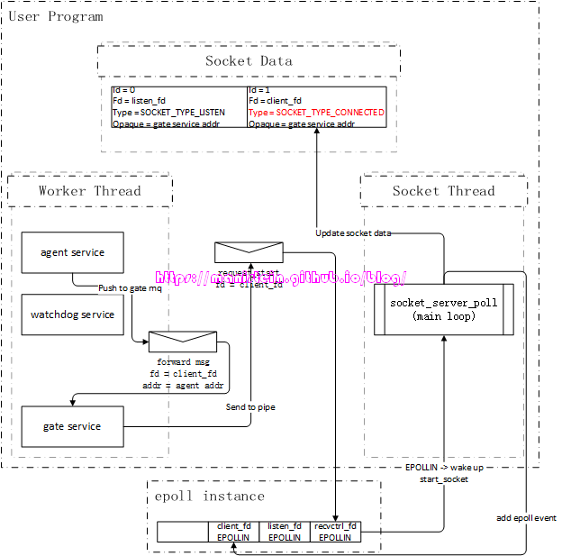
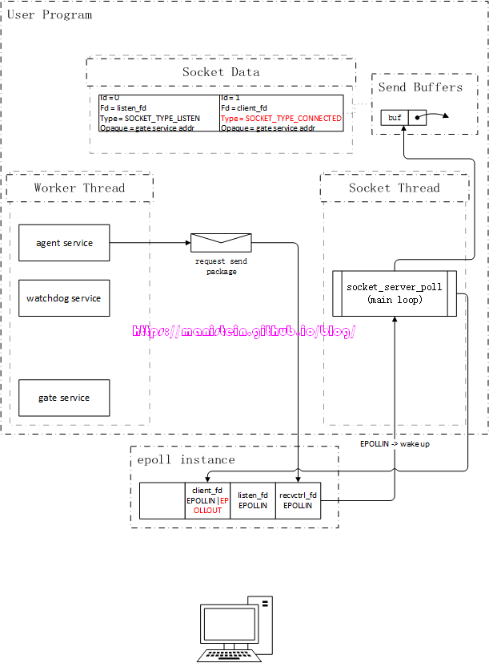
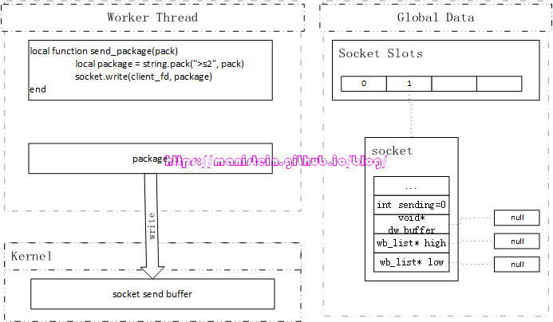

前言
我在前几年，写了一篇《skynet源码赏析》，阐述了skynet的整体设计，和核心运作机制流程，该文针对的是skynet-1.0版本，如今skynet已经升级到1.3版本，总的来说，skynet整体架构并没有特别大的改动，不过从1.2版本开始，skynet增强了网络并发处理的能力。1.3改进了cluster机制，修复了一些大量并发可能导致的bug。尽管《skynet源码赏析》这篇，已经详细地阐述了skynet内部实现机制，不过对于网络部分，这篇只是阐述了大致的运作机理，并未深入源码层进行非常细致的分析，为了填补这个遗憾，我决定在近期新增一篇专门讲解skynet网络机制的blog，此外我还计划在未来几个月内，写一篇集群机制的blog，以此完成我所谓的“skynet源码剖析三部曲”，XD。
本片博文研究的源码是skynet-1.3版本，尽管这篇的篇幅会比《skynet源码赏析》那篇要短，但是我还是建议读者先阅读那篇文章后，再阅读本篇，这样有助于读者真正消化和吸收。本文会以skynet example里的watchdog例子，作为基点，主要阐述skynet提供的gate服务的创建、运作流程，包括如何它是如何监听一个端口，如何接受一个客户端的连接，如何处理读写事件，以及如何处理关闭事件。本文只是论述客户端和服务器gate相关服务的交互流程，并不涉及到集群相关的内容，有关集群机制，我会在后续的文章中，进行论述。最后由于本人水平有限，如果有写的不当之处，希望大家能够批评指正，任何意见或建议我都将虚心接受，大家可以在qq185017593这个群找到我，欢迎大家的到来。
关于本文探讨的example
本文探讨的example位于skynet example目录下的main.lua，读者可以通过这个链接下载skynet 1.3的源码，根据Build的指引，完成skynet的编译以后，会在skynet目录下生成一个可执行文件skynet*，要启动这个example，在cd到skynet目录以后，我们只需要输入如下指令：
./skynet ./example/config这样就可以启动watchdog的例子了，此外skynet也提供了一个测试客户端，读者可以通过如下指令来启动
./3rd/lua/lua ./examples/client.lua 本文不会详细讨论这个example如何去序列化和反序列化数据包，也不会讨论client脚本的逻辑实现，只是着重于，我们的gate服务如何监听、接受新的连接、收发数据包以及关闭连接的逻辑流程。这里只是提醒读者，可以通过这两套东西，来研究skynet gate模块的内容。
我们现在来看一下，这个main服务的代码：
-- skynet/example/main.lua
local skynet = require "skynet"
local sprotoloader = require "sprotoloader"
local max_client = 64
skynet.start(function()
skynet.sleep(10);
skynet.error("Server start")
skynet.uniqueservice("protoloader")
if not skynet.getenv "daemon" then
local console = skynet.newservice("console")
end
skynet.newservice("debug_console",8000)
skynet.newservice("simpledb")
local watchdog = skynet.newservice("watchdog")
skynet.call(watchdog, "lua", "start", {
host = "127.0.0.1",
port = 8888,
maxclient = max_client,
nodelay = true,
})
skynet.error("Watchdog listen on", 8888)
skynet.exit()
end)该服务最后创建了一个watchdog服务，关于watchdog服务的代码，我们可以在example/watchdog.lua里找到。和watchdog服务相关的内容，则是本文需要详细讨论的内容。这个main服务创建以后，会相继创建一个watchdog服务，然后再创建一个gate服务，并与watchdog关联在一起，本文所有要讨论的问题，都和这两个服务相关。本文只讨论TCP相关的处理，并不会涉及到UDP的内容。多路复用这里，skynet支持epoll和kqueue，这里我只讨论使用epoll的情况。
整体运作流程
我们在输入./skynet ./example/config命令后，skynet节点会启动一条socket线程，socket线程会进入到自己的main loop里，进行它的socket逻辑处理，与此同时，worker线程也会执行创建main服务并执行其初始化(skynet.start内的代码)的逻辑，并最终创建一个watchdog服务和一个gate服务。最终我们在worker里运行的gate服务，将会和socket线程进行交互，并以此来完成listen、accept、read、write和close socket的逻辑流程。这里要事先说明的是，图中凡是出现信封图片的，均表示向skynet服务的mq push一个消息，信封图标箭头指向的服务，表示该服务消费了这个消息。此外，我们的socket线程，在没有IO事件的时候，是处于睡眠状态的，从epoll instance到socket_server_poll的箭头，表示有IO事件，需要唤醒socket线程，socket线程处理完事件后，会立刻投入睡眠，直到下一个IO事件触发。
Listen整体流程
现在我们首先来讨论listen的流程，我们在创建watchdog服务的时候，watchdog服务在执行初始化流程时，会创建一个新的gate服务，并且将main服务里填写的ip和port传给gate服务，gate服务收到后就要开始监听该ip和端口：
图1
如图1所示，gate服务的逻辑是在worker线程里执行的，而socket相关的逻辑是在socket线程里执行的，在skynet中，worker线程要和socket线程通信，是通过管道(pipe)进行的，即worker线程写入(通过sendctrl_fd)，socket线程读取(通过recvctrl_fd)，pipe保障了worker线程向socket线程写入请求的原子性[1]。
实际上，通过socket api创建一个socket fd，然后调用listen函数将其设置为listen_fd，最后通过bind函数绑定ip和端口的流程，是在gate服务里执行的，也就是在worker线程里执行这些流程。由于epoll实例只会告诉我们，哪个fd可读，或者可写，但是并没能告诉我们可读事件和可写事件的实际含义是什么，因此，我们需要对不同的socket fd赋予不同的类型，以方便我们在可读或者可写事件触发时，找到对应的处理逻辑。skynet则定义了一种socket数据结构，在图1的表示中，我们姑且将其称之为Socket Data，gate服务在创建listen_fd以后，自然是希望能够使用它来监听连接请求事件，也就是说，对于listen_fd来说，当EPOLLIN事件触发时，就意味着在socket_server_poll里，它需要调用accept来接受一个新的连接请求。因此我们需要在Socket Data里，创建一个skynet内部定义的socket数据实例，将listen_fd赋值给它，并将type设置为SOCKET_TYPE_LISTEN，这份socket数据实例，会作为自定义数据和listen_fd绑定，当listen_fd有EPOLLIN事件时，我们可以通过Socket Data里的type类型，执行对应分支的逻辑(处理客户端连接事件)。下面展示了一段伪代码简要说明Socket Data的作用，后面我们会详细讨论。
// socket_server_poll loop
...
// block until epoll events trigger
event_list el = sp_wait(epoll_fd, mode_block);
for e in el do
fd = e->fd;
type = get_socket_type(fd)
switch(type) {
case SOCKE_TYPE_LISTEN: // do accept
case SOCKE_TYPE_CONNECT: ...
...
}
end
...我们可以注意到，图1中，Socket Data里有个Opaque字段，这个字段标记了gate服务的地址，标明这个socket是和gate服务关联的，socket线程收到该socket的网络消息包时，是需要转给gate服务的。不过，将fd和skynet的socket数据实例绑定，和注册epoll事件，是分两步进行的，这样做的目的很简单，就是为了让服务完成初始化以后，再通知socket线程，与该服务关联的fd，此时可以处理网络请求了(什么时候可以处理网络请求的决定权，交给了业务层)。
Accept整体流程
绑定和监听一个ip和端口的socket被创建以后，我们就可以处理连接事件了，假设我们现在有个客户端，向我们的skynet服务器发起了连接请求，在我们所使用的watchdog例子中，发生了什么事情呢？我们可以通过图2来观察一下这个过程：
图2
首先检测到有IO事件的，是我们的epoll实例，它会唤醒我们的socket线程，socket线程会得到epoll事件列表，并逐个处理他们，epoll事件实例中，存放着对应的fd，以及与该fd绑定的skynet socket数据实例，因为是连接事件，因此listen_fd收到了一个EPOLLIN的事件，由于listen_fd所绑定的Socket Data中的type类型是SOCKET_TYPE_LISTEN，因此它将执行的是accpet操作。从图2中，我们可以看到，这个被accpet的fd是client_fd，它被设置了keepalive，以及被设置为了非阻塞模式，接着，socket线程还为client_fd创建了一个新的skynet socket实例，图2展示了该socket实例对应的信息。最后，socket线程向gate服务，发送了一个新连接到达的消息。gate服务会将该消息转发给watchdog服务，而我们的watchdog服务又创建了一个agent服务，agent服务在完成初始化以后，就向gate服务发送了一个forward的消息，这个消息的作用主要是，在gate服务中，记录client_fd和agent服务地址的映射关系，并且向socket线程，发送client_fd的start_socket请求，这个请求的作用，就是告知socket线程，为client_fd注册epoll事件，同时改变socket数据实例的type，表示agent可以接收网络消息了。
图3
这里需要注意的是，我们的client_fd目前只是注册了EPOLLIN事件，并未注册EPOLLOUT事件，虽然我们的client_fd是需要用来读取数据包和写入数据包的，但是，应当在有需要发送数据包的时候再去设置EPOLLOUT事件，否则epoll_wait会被频繁唤醒，而又没东西可写，反而降低了性能。
Read整体流程
读取数据包的整体流程，其实比较简单，当客户端向skynet服务端发送数据包的时候，socket线程则会收到client_fd的EPOLLIN事件，此时，socket线程则会从buffer中读取client_fd的数据包，因为客户端的应用层数据包很可能被分割成若干个segment，因此，socket线程则一次能读多少，就给gate服务push多少，gate服务则会进行分包和粘包处理，在收齐完整的数据包后，再将完整的complete数据包转发给agent服务。
图4
Write整体流程
agent发送数据包，则要经历两个步骤，第一个步骤是将数据包发送给socket线程，socket线程收到后，将发送的buffer放到skynet socket实例的send buffer列表中，此时注册client_fd的EPOLLOUT事件，等待数据包可发送的时候，将send buffer里的数据包发送给客户端。
图5
当client_fd可写时，epoll实例会唤醒socket线程，此时socket线程，会将client_fd的发送队列中，取出头部的buffer，并将其写入到内核中，他有可能一次写不完，不过作为整体流程，这里做最简化处理，详细内容我们将在后续进行讨论，数据包在写入内核后，会在合适的时机，发送数据包给客户端。此外，每个skynet socket数据实例，都会有一个高优先级队列和低优先级队列，skynet从1.2开始还增加了网络并发处理的机制，这些内容我将在后续的内容中进行讨论。
 图6
图6
Close整体流程
关闭流程，主要分为两个部分，一个是服务器主动关闭，还有一种则是客户端主动关闭。这里我们先讨论客户端主动关闭的情况，再讨论服务端主动关闭的情况，在我们的例子中，一旦连接关闭，那么在gate服务中，agent和fd的关联会被解除，并且agent服务会被销毁。
关于客户端主动关闭的情况，服务端则会read到0个字节，read返回0表示遇到了EOF的情况[2]，EOF表示客户端已经关闭连接，因此服务器只需要调用close函数，关闭client_fd，清除epoll事件，并销毁gate服务中，未读取完整的数据包，以及发送队列中的数据包。
至于服务端主动关闭的情况则会复杂一些，比如gate服务关闭了client_fd的连接，首先它会向socket线程发送关闭请求，socket线程收到后，会将skynet socket数据实例的type改成SOCKET_TYPE_HALFCLOSE，这意味着，client_fd，不能接收来自客户端的数据包，在业务层中，也不能再发送数据包。但是skynet socket数据实例中，未发送完的buffer则会继续发送，直到所有的buffer都发送完以后，才会彻底销毁这个实例，执行全面关闭逻辑。
epoll机制与file descriptor简介
skynet在linux下，使用epoll来监控多个fd(file descriptor)，在继续讨论skynet的网络机制之前，对epoll和file descriptor进行讨论是非常重要的。实际上，有关epoll讲解的文献中，在我能找到的中英文资料之中，我认为是这篇《The method to epoll’s madness》[3]写的最好。我接下来要讨论的很多观点来自此文，这里我将论述的是，我认为的最核心，最关键的部分，同时我也会补充一些内容(epoll的lt和et模式等)，如果想阅读原文，读者可以到Reference中找对应的链接，当然你可能需要科学上网才能够阅读该文。在这里，我将从概念层面来讨论epoll，而不是从源码层面来讨论，我的目标是论述清楚，它是什么，它的运作流程如何，而不是一开始就去研究它怎么实现。
epoll的运作原理
要使用epoll，首先我们要理解epoll到底是什么？epoll是event poll的缩写，它是用来取代我们的IO多路复用函数poll和select的。它的主要功能是监听多个file descriptor，并且在他们有事件的时候，通知使用它的应用程序，并且它比传统的poll和select更高效。要使用epoll，首先我们需要通过一个函数来创建一个epoll实例，它是：
int epoll_create(int size);当这个函数调用成功时，它会返回一个非负整数值，这个值代表epoll实例的file descriptor(也就是我们常说的fd，后面会对这个概念进行论述)，当它调用失败时，它会返回-1，并且我们可以通过errno宏来获取错误码。它只有一个参数，表示我们要监听的fd数目，以告知kernel它需要分配多少内存，但是从Linux 2.6.8开始，epoll实例会根据应用程序添加或删除epoll事件，来动态分配内存，因此这个参数可以被忽略，但是必须填一个大于0的整数值[4]。我们创建一个epoll实例，只需要调用如下代码即可：
int epfd = epoll_create(1024);
if (epfd == -1) {
printf("fail to create epoll instance, error code is %d", errno);
}epfd代表了，被创建的epoll实例的文件句柄，为了描述清楚，epoll实例和我们应用进程之间的关系，我引用《The method to epoll’s madness》的一张图，后续类似风格的图，均来自该文，读者可以到原文查阅，凡是未打上我blog水印的图片，均表示该图非原创(不敢冒他人之功XD)。
图7
从图中，我们可以看到，epoll实例存在于内核之中。
当我们想要监听某个fd(socket或者pipe等)时，就要将其添加到一个被称之为interest list的列表中，这个interest list表示，所有要被epoll实例监听的fd集合，当我们的interest list中的fd，有IO事件的时候（可读或可写事件），就会将对应的fd加入到一个叫做ready list的列表中，这个ready list是interest list的子集，它表示列表中的fd的IO已经准备就绪，需要通知应用程序去处理这些fd的IO事件，图8和图9则说明了这一点。
 图8
图8
 图9
图9
那我们如何添加我们想要监听的fd到epoll实例中呢？实际上，linux给我们提供了一个epoll_ctl函数来做这些处理，它的定义如下所示：
int epoll_ctl(int epfd, int op, int fd, struct epoll_event *event);它包含几个参数，epfd表示，应用程序使用的epoll实例的fd，比如我们传入刚刚创建的epfd则表示，我们要使用这个实例。op表示控制参数，一共有EPOLL_CTL_ADD、EPOLL_CTL_MOD和EPOLL_CTL_DEL三种，分别表示添加，修改和删除要被监听的fd，以及被监听的方式。fd表示要被操作的fd，而epoll_event则表示与该fd绑定的信息结构。epoll_event的定义如下所示：
typedef union epoll_data {
void *ptr;
int fd;
uint32_t u32;
uint64_t u64;
} epoll_data_t;
struct epoll_event {
uint32_t events; /* Epoll events */
epoll_data_t data; /* User data variable */
};epoll_data是一个union结构，我们可以在fd域，直接填入对应的file descriptor number，但是如果这样，我在上一节中也说过，epoll只能告知我们某个file descriptor有可读或者可写事件，但是并不能告知我们可读和可写事件的具体含义，因此我们需要有一个自定义的数据结构，比如上节展示的Socket Data里的结构（包含fd和type域），如果我们把epoll_data的ptr指针指向这个数据实例，那么当某个fd有事件触发时，就可以根据Socket Data数据实例中的Type来决定具体做什么处理，后面我们将详细讨论。比如，我们现在要添加一个fd1到epoll实例中，那么我们可以调用如下代码来进行:
// socket_data represents skynet socket structure instance
struct epoll_event ev;
ev.events = EPOLLIN;
ev.data.ptr = (void*)socket_data;
epoll_ctl(epfd, EPOLL_CTL_ADD, fd1, &ev);那么，此时我们就向epoll实例，注册了一个只监听只读事件的fd1了。同样的，如果在某个时刻，我们希望改变fd1的监听行为，比如想要它也监听可写事件，因为fd1已经被注册了，因此，我们需要通过将op参数改为EPOLL_CTL_MOD来进行，其代码如下所示：
// socket_data represents skynet socket structure instance
struct epoll_event ev;
ev.events = EPOLLIN | EPOLLOUT;
ev.data.ptr = (void*)socket_data;
epoll_ctl(epfd, EPOLL_CTL_MOD, fd1, &ev);当在某个时刻，我们不想监听fd1的事件的时候，我们就可以调用epoll_ctl函数将其删除，删除的代码很简单，如下所示：
epoll_ctl(epfd, EPOLL_CTL_DEL, fd1, NULL);我们将op参数改成EPOLL_CTL_DEL，将ev改成NULL即可，非常简单，我们可以通过图10，来总结刚才论述的内容。
图10
刚刚我们知道了，我们创建的epoll实例，是最终监控我们fd列表的IO事件的主体，而被监控的fd会被添加到一个被称之为interest list的列表中，当interest list中的fd，有IO事件的时候，他们会被放入一个被称之为ready list的列表中。那么此时，我们的应用层，如何获取这个ready list呢？答案是通过epoll_wait函数，关于epoll_wait函数的定义如下所示：
int epoll_wait(int epfd, struct epoll_event *events, int maxevents, int timeout);同样的，epfd表示我们使用中的epoll实例的fd，events包含了一个epoll_event的数组指针，maxevents表示该数组的大小。timeout则比较有趣，当timeout为0时，不管我们的ready list是否为空，epoll_wait都会立即被唤醒，当timeout > 0的时候，epoll_wait会在如下几种情况被唤醒：
- 当有进程的signal信号达到的时候
- 当从最近一次调用epoll_wait的时刻算起，进行timeout毫秒以后
- 当ready list不为空时
而当timeout为-1时，它在如下情况会被唤醒：
- 当有进程的signal信号达到的时候
- 当ready list不为空时
也就是说，当epoll_wait的timeout为-1的时候，表示它会阻塞住调用它的线程，直到有IO事件触发，也就是ready list不为空的情况下。在skynet中，只有socket线程会调用epoll_wait函数，而且timeout的值填-1，也就是说，只有刚才讨论的两种情况下，epoll_wait才会被唤醒，其他时间，socket线程会投入睡眠，这样可以避免，当没有IO事件要处理的时候，cpu不会花费任何一个时间片到socket线程上。我们现在通过一个时序图，来说明，应用进程是如何获取我们的IO事件列表的。如图11所示，假设我们在t1之前，socket线程就已经调用了epoll_wait，并且timeout赋值为-1，那么此时调用epoll_wait的socket线程是阻塞状态。
图11
在t1时刻，此时有fd的IO事件触发，那么有IO事件的fd，会连同触发的事件类型，一起包含到epoll_event结构中，被放入ready list里。在经过一系列的处理以后，kernel会在时刻t4唤醒epoll_wait，我们于是可以得到唤醒事件列表，并进行处理。
图12
我们通过一段伪代码进行简要说明
// socket_server_poll loop
...
// block until epoll events trigger（before t4）
struct epoll_event ev[MAX_EV];
int n = epoll_wait(epfd, ev, MAX_EV, -1);
// wake up after t4
for(int i = 0; i < n; i ++) {
struct epoll_event* e = &ev[i]
socket_data = e->data.ptr;
type = get_socket_type(socket_data)
switch(type) {
case SOCKE_TYPE_LISTEN: {
// int listen_fd = socket_data->fd
report_accpet(socket_data);
} break;
case SOCKE_TYPE_CONNECTED: {
int flag = e->events;
int read = (flag & EPOLLINT) != 0;
int write = (flag & EPOLLOUT) != 0;
int error = (flag & EPOLLERR) != 0;
if (read) {
// do read for socket_data->fd
}
if (write) {
// do write for socket_data->fd
}
if (error) {
// do error
}
...
} break;
...
}
...
}
...我们可以看到，当epoll_wait被唤醒的时候，就表示有事件到达，紧随其后就是处理这些事件。epoll_event结构，是我们用来获取ready list里的信息的结构，前面我们也看到过，主要包含两个域，一个是events，表示当前被唤醒的fd，包含了哪些事件(可读、可写或出错)。另一个则是一个union域，epoll_data，我们可以只填写一个fd，用来表示哪个fd需要被处理，但是光有fd是不够的，因为不同的fd，要做的事情是不一样的，比如我们的listen socket，这个fd被唤醒时，表示它是可读的，但它只有一件事情要做，就是去accpet新的连接，而一个表示和客户端通信的socket，当它被唤醒的时候，就是需要处理可读或者可写事件，所以我们需要一个额外的结构，并且将这个结构实例的指针，赋值给epoll_data的ptr域，以方便我们在有事件到达时，做出正确的处理。
epoll的LT和ET模式
要彻底讲明白epoll，就绕不开它的两种模式，即是水平触发(level trigger)和边缘触发(edge trigger)。为了探索它们的本质，我写了一个example，用来探索LT和ET模式，分别在读取数据和写入数据中的逻辑表现，这么做的目的是为了彻底搞清楚LT和ET的本质是什么。接下来的论述，主要围绕着这个实验代码展开，我非常鼓励读者到我的github页面，去下载，并按照上面的指引，去编译和运行，真实地去跑起来，借以强化对本文观点的吸收和消化。
该实验包含了一个server的程序，和一个client的程序。server程序主要负责研究读取数据包的情况，包括在LT和ET两种模式下的情况。client程序主要负责研究数据包写入的情况，包括在LT和ET两种模式下的情况。我先会分别介绍server和client程序的基本运作流程，然后再分别研究它们在LT和ET模式下的运作方式。
如图13所示，它展示了我们example里的server程序，在正常情况下的运作流程(限于篇幅，这里忽略异常的情况)
图13
接下来对图上的流程进行说明：
- 通过epoll_create函数，在kernel创建epoll实例
- 创建监听ip和port的socket，获得listen_fd，listen_fd绑定了ip:port。
- 将listen_fd添加到epoll的interest list中，它监听EPOLLIN事件，任何连接ip:port的客户端，都会告知listen_fd
- 进入到epoll_wait的循环中，这里的循环，不是指epoll_wait占着cpu轮询等待，而是一种逻辑上的表示，表示没有IO事件触发时，程序会停留在epoll_wait这个步骤，不会继续执行，实际上，这里指的是epoll_wait投入了睡眠。
- 当有fd的IO准备就绪时，我们会获得一个event_list，此时遍历event_list，并逐个进行处理，具体执行如下所示
- 如果是listen_fd的IO准备就绪，那么则处理accept事件，获得一个代表和客户端连接的fd，并且将fd添加到epoll的interest list中，同时设置EPOLLIN标志，图中的？表示，如果server程序采用的是LT模式，那么它代表EPOLLLT，否则它代表EPOLLET
- 如果是代表客户端连接的fd的IO准备就绪，那么则从fd读取两个字节，并打印
- event_list如果完成遍历，则返回第4步，否则返回第5步
我们接下来看看，client测试客户端是怎么处理的， 图14
- 通过epoll_create函数，在kernel创建epoll实例
- 以阻塞模式，连接ip:port，并得到一个表示连接的fd
- 使用fcntl函数，将fd设置为非阻塞的
- 将fd添加到epoll实例的interest list中，并设置EPOLLIN这个flag，表示要检测READ的IO事件，图中的？表示，如果以lt模式启动客户端，那么？就是EPOLLLT，否则就是EPOLLET
- 进入逻辑循环，进入input函数，通过控制台输入，按回车键结束（进入第6步），也可以不输入任何信息，直接输入回车键跳过input这个流程（直接进入第7步）
- 创建一个新的buffer，存放刚输入的信息，并且push到输出队列wb_list中，如果在push之前wb_list是空的，那么添加fd的EPOLLOUT的flag
- 进入到epoll_wait函数，程序投入睡眠，图中的循环表示程序执行停留在epoll_wait这一步，当有IO事件触发时，进入下一步，否则停留在第7步
- 如果event_list为空，则返回到第5步，否则从event_list中取出一个事件
- 从wb_list中，将作为head的buffer，里的数据，最多拿出8个字节写入到fd中，当head写完的时候，则从wb_list里移除，如果此时wb_list为空，则将fd的EPOLLOUT事件移除
- 返回到第8步
我们可以看到，描述client的情况比较复杂，因为它要处理wb_list，还要处理输入的情况，而输入的情况，就是第5步描述的情况，而写入fd的情况，就是第9步所描述的情况，现在分别对第5步和第9步作说明。先说第5步的情况，一般而言，对于一般的网络模块，我们会设计一个应用进程使用的发送数据包的函数，在本例中，就是input函数，我们将要发送的数据，交给这个函数，就要创建一个buffer，然后将这个buffer放入发送队列wb_list中，如果原来的wb_list是空的，那么这个新push进去的buffer就是head buffer，此时需要为fd添加EPOLLOUT事件，为什么呢？因为wb_list不为空，代表有东西写入了，因此当输出的IO事件准备就绪时，epoll_wait唤醒时，event_list要包含目标fd，就必须让这个fd加上EPOLLOUT flag，而后续新创建的buffer，在push到wb_list时，只要wb_list不为空，就不需要再次去注册EPOLLOUT事件。
图15
而对于第9步来说，一旦fd的输出IO准备就绪，epoll_wait就会被唤醒，并且执行我们的output函数，从head buffer开始，将其中的数据不断write出去，当wb_list为空时，因为没有数据包要写了，所以需要让fd取消对EPOLLOUT事件的监听。现在截取client程序中的output函数逻辑，它所代表的的则是图14中，“Write up to 8 bytes into fd”这个步骤的流程
static void output(int epfd, int fd, int event) {
printf("begin to output\n");
struct WRITE_BUFFER* wb = wb_list.head;
if (wb) {
int wsize = wb->size - (wb->ptr - wb->buf);
if (wsize > WRITE_NUM) {
wsize = WRITE_NUM;
}
int n = write(fd, wb->ptr, wsize);
if (n <= 0) {
abort();
}
printf("wsize:%d n:%d\n", wsize, n);
printf("<<<<");
char* ptr = (char*)wb->ptr;
for (int i = 0; i < n; i ++) {
printf("%c", ptr[i]);
}
printf("\n");
wb->ptr += wsize;
if (wb->ptr >= wb->buf + wb->size) {
if (wb_list.head == wb_list.tail) {
wb_list.head = wb_list.tail = NULL;
free_buffer(wb);
struct epoll_event ee;
ee.events = event;
ee.data.fd = fd;
epoll_ctl(epfd, EPOLL_CTL_MOD, fd, &ee);
}
else {
wb_list.head = wb_list.head->next;
free_buffer(wb);
}
}
}
printf("end to output\n");
}我们可以看到，每个WRITE_BUFFER实例，wb，都有一个buf指针，指向数据内存，还有一个ptr指针，它的初始值是buf地址，每次write完数据的时候，ptr会向右偏移，表示下次开始发送的地址，当ptr>=wb->buf+wb->size时，代表一个buffer写完，此时这个buffer需要从wb_list中被pop出来。
花了一些篇幅，讨论了测试server和测试client的逻辑流程，终于到了开始探索LT和ET两种模式的原理的时候了，首先我们来看一下接收数据包，采用LT和ET两种模式的情况。我们先以LT的方式启动测试server，然后以LT的方式启动测试client(为了方便测试，测试server时，client一律使用lt模式，以做到能够更流畅地发送数据包)，此时从测试客户端输入aabbccdd字符信息，并按下回车键结束，于是客户端的发送流程如下所示：
图16
由于上面这个例子中，我们是首次输入数据，因此wb_list由空变为非空，代表现在有东西可写了，因此此时要对fd添加EPOLLOUT监听，新push的buffer包含了aabbccdd信息。因为fd设置了EPOLLOUT这个flag，因此此时客户端的发送缓存处于就绪状态，因为epoll_wait会被唤醒，开始执行output函数，我们的测试client一次能够最多写入8个字节，因此刚刚输入的信息会被全部write到fd的发送缓存中，写完以后，我们的buffer会从wb_list中移除，wb_list此时为空，没东西可写了，于是fd的EPOLLOUT监听被移除，我们的逻辑循环，回到了input这个阶段。
图17
我们现在来看一下，服务器接收数据包的情况，我们这里忽略客户端连接服务器的流程，直接看数据包接收的流程：
图18
上图展示的，测试server在接收数据包时，执行的逻辑流程，当代表与客户端连接的fd，IO准备就绪时，epoll_wait就被唤醒了，每次epoll_wait被唤醒，测试server就会从接收缓存中读取两个字节，并加以打印。由于此时，测试server使用的是lt模式，也就是epoll实例，对表示和客户端连接的fd设置的是LT模式，因此，只要接收缓冲中有数据，epoll_wait就会不断被唤醒，在上面的例子中，epoll_wait会被唤醒4次，测试server一共会进行四次打印：
第一次：aa
第二次：bb
第三次：cc
第四次：dd完成对dd的读取和打印以后，fd的接收缓存就空了，当流程回到epoll_wait这一步时，会再次投入睡眠。并等待下一次IO准备就绪。大家需要注意的是，这里为了简化问题，我们只有一个测试服务端和一个测试客户端。以上讨论的则是LT模式的情况，我们现在来看一下ET的情况，现在分别重启测试服务端和测试客户端，服务端输入ET参数启动，而客户端仍然输入LT参数启动，此时，客户端仍然输入aabbccdd，并按下回车键，客户端将数据包发送出去，服务端代表和客户端连接的fd，在收到数据包后，IO准备就绪，epoll_wait唤醒(回顾一下图18)，服务端读取两个字节，并输出aa后，流程进入到epoll_wait，然后继续投入睡眠，对于该fd来说，它的接收缓存还有bbccdd，但是因为fd被设置了EPOLLET标记，因此它使用的是ET模式，epoll_wait不会被再次唤醒，服务端已经此时已经没有机会去读完接收缓存里，未读完的数据了，除非客户端又发了一个新包过来，这样epoll_wait将会被再次唤醒。从这里，我们可以得出一个结论，即是在ET模式下，当每次有数据包到达socket的接收缓存的时候，epoll_wait只会被唤醒一次，因此接收方，必须一次将所有的数据，从接收缓存中读出(一直read，直到返回EAGAIN)，否则就会有数据残留在接收缓存里，如果没有新的数据包到达，那么余下的数据包就会一直在接收缓存里，导致接收方永远无法将发送方发送的字节流全部读到，导致严重的bug。
我们已经研究完，读取数据包在LT和ET两种模式下的表现，现在来看一下写入数据包，在LT和ET两种模式下的情况。我们先研究LT的情况，重新以LT模式启动服务端，以LT模式启动客户端，此时从客户端输入aabbccddeeffgghh，一共16个字节的数据，回顾一下图17，因为客户端是首次写入信息，因此代表和服务端连接的fd，此时会被设置EPOLLOUT标记，在输入完要发送的信息以后，运作逻辑接着往下走，此时我们的epoll_wait一共会被唤醒两次，然后输出以下内容：
第一次：aabbccdd
第二次：eeffgghh在发送完16个字节的信息以后，fd被取消EPOLLOUT这个flag，因为没东西发送了。从这里我们可以得到一个结论，在LT模式下，只要fd的发送缓冲还有空间，还能写入，epoll_wait就会被不断被唤醒，直至发送端写完数据包，取消fd对EPOLLOUT事件的监听为止。
接下来，我们关闭测试客户端，通过输入et参数，启动测试客户端，在和服务器连接之后，我们输入aabbccdd，按下回车键，此时客户端程序会为其创建一个buffer，并且为fd添加EPOLLOUT的flag，因为测试客户端一次最多能发送8个字节的信息，因此输入的信息被全部发送出去，在完成发送以后，因为数据全部发完，因此取消fd对EPOLLOUT事件的监听，我们再输入eeffgghh，同样能够再次唤醒epoll_wait函数，将这8个字节全部发送出去。现在我们来看另外一种情况，就是一次从客户端输入aabbccddeeffgghh，此时epoll_wait被唤醒，并且在客户端发送完aabbccdd以后，逻辑流程返回到执行函数input这里(回顾一下图17)，此时我们没有要输入的新数据，因此直接按下回车键跳过，流程再次回到epoll_wait这里，但是这次epoll_wait不会被再次唤醒，因为我们没有一次将所有的数据包写完。在这里我们可以得到一个结论，在ET模式下，一旦IO准备就绪，我们需要一次性将要发送的数据包写完，如果写完，我们要取消fd对EPOLLOUT事件的监听，下次有新的数据要发送时(wb_list从空到非空的时候)，重新为fd在epoll实例中添加EPOLLOUT这个flag，那么epoll_wait才会被再次唤醒，让客户端进行写入。也就是说，在我们的发送缓存，不会被写满的情况下，每次为fd设置一次EPOLLOUT标志，epoll_wait只会被唤醒一次。
为了证明，我们每次为fd注册监听EPOLLOUT事件，在ET模式下只会唤醒一次epoll_wait（在发送缓存未被写满的情况下），我在测试客户端的input函数里，添加了一段逻辑，就是输入~字符时，取消fd对EPOLLOUT的监听，然后重新设置fd对EPOLLOUT事件的监听，我们重启client以后（参数为et），同样地输入aabbccddeeffgghh，并按下回车键，客户端会立即输入aabbccdd，然后回到我们的执行我们input函数的逻辑流程之中，此时输入~，执行重新对fd注册监听EPOLLOUT事件，按下回车，之后epoll_wait被再次唤醒，写入了eeffgghh。
static void input(int epfd, int fd, int event) {
printf("begin input\n");
char buf[MAX_INPUT_CHAR];
int idx = 0;
for (;;) {
int c = getchar();
if (c == '\n'|| idx >= MAX_INPUT_CHAR - 1) {
break;
}
// reset epollout
if (c == '~') {
struct epoll_event e;
e.events = event & (~EPOLLET);
e.data.fd = fd;
epoll_ctl(epfd, EPOLL_CTL_MOD, fd, &e);
e.events = event | EPOLLOUT;
epoll_ctl(epfd, EPOLL_CTL_MOD, fd, &e);
printf("epollout reset\n");
continue;
}
buf[idx] = c;
idx++;
}
buf[idx] = '\0';
if (idx > 0) {
struct WRITE_BUFFER* wb = new_buffer(idx);
if (wb_list.tail == NULL) {
wb_list.head = wb_list.tail = wb;
struct epoll_event ee;
ee.events = event;
ee.data.fd = fd;
epoll_ctl(epfd, EPOLL_CTL_MOD, fd, &ee);
}
else {
if (wb_list.head == wb_list.tail) {
wb_list.head->next = wb;
}
wb_list.tail->next = wb;
wb_list.tail = wb;
}
memcpy(wb->buf, buf, sizeof(char) * idx);
}
printf("%s\n", buf);
printf("end input\n");
}我们看到，和之前不同的是，这次发送了一半的数据之后，我们重新设置了fd的EPOLLOUT flag，而设置之后，epoll_wait又再次被唤醒了，从而证实了，每次为fd注册EPOLLOUT，在ET模式下，在发送缓存未被写满的情况下，epoll_wait只会被唤醒一次。
刚才我们探讨了，以ET模式写入数据包，发送缓存未被写满的情况，现在我们来探讨一下发送缓存被写满的情况，它会发生什么。为了模拟写满的情况，这里我对测试客户端的output函数，增添了一段代码，该代码是，每次客户端完成一次写操作，且未将所有数据写完的时候，向发送缓存无限写一个字符P，直至写满(返回EAGAIN)为止，代码如下所示：
static void output(int epfd, int fd, int event) {
printf("begin to output\n");
struct WRITE_BUFFER* wb = wb_list.head;
if (wb) {
int wsize = wb->size - (wb->ptr - wb->buf);
if (wsize > WRITE_NUM) {
wsize = WRITE_NUM;
}
int n = write(fd, wb->ptr, wsize);
if (n <= 0) {
abort();
}
printf("wsize:%d n:%d\n", wsize, n);
printf("<<<<");
char* ptr = (char*)wb->ptr;
for (int i = 0; i < n; i ++) {
printf("%c", ptr[i]);
}
printf("\n");
wb->ptr += wsize;
if (wb->ptr >= wb->buf + wb->size) {
if (wb_list.head == wb_list.tail) {
wb_list.head = wb_list.tail = NULL;
free_buffer(wb);
struct epoll_event ee;
ee.events = event;
ee.data.fd = fd;
epoll_ctl(epfd, EPOLL_CTL_MOD, fd, &ee);
}
else {
wb_list.head = wb_list.head->next;
free_buffer(wb);
}
}
else {
// test write full
for(;;) {
char test[1] = { 'p' };
int n = write(fd, test, 1);
if (n <= 0) {
if (errno == EAGAIN) {
printf("send buffer is full\n");
break;
}
}
}
}
}
printf("end to output\n");
} 现在我们重启测试程序client(输入参数et)，并输入aabbccddeeffgghh，并按下回车键，此时epoll_wait会被唤醒，客户端输出aabccdd，此时我们的客户端会不断朝发送缓冲区写入字符P，直至写满，流程回到input函数后，我们直接按下回车键跳过，此时epoll_wait处于等待状态，在若干分钟之后，epoll_wait被再次唤醒，并将剩下的eeffgghh写入发送缓冲。
论述了很多，我们现在可以得到如下结论：
- 在LT模式中，只要接收缓冲不为空，epoll_wait会不断被唤醒，每次唤醒时，我们不必一次将其读完。
- 在LT模式中，只要发送缓存未满，epoll_wait就会不断被唤醒，我们不必一次将要发送的数据包写完，或者将发送缓冲写满。
- 在ET模式中，接收缓存每收到一次数据包，只会唤醒epoll_wait一次，此时我们要将接收缓冲区内的信息一次读完，否则未读取的数据包就会残留在接收缓存中。
- 在ET模式中，每次为fd设置一次EPOLLOUT的flag，在发送缓冲不会被写满的情况下，epoll_wait只会被唤醒一次。如果我们将发送缓存写满，当它空出来的时候，我们不用再次设置EPOLLOUT到fd中，epoll_wait也会再次被唤醒。因此我们必须在epoll_wait唤醒的时候，一次将要发送的数据写完，或者将发送缓存写满，否则就会发生事件泄露。
我们已经探讨了epoll的lt和et两种模式的逻辑流程，至于要使用et还是lt，完全取决于项目需要。在lt模式中，只要接收缓冲不为空，发送缓存可以继续写，那么epoll_wait都会被不断唤醒，每次投入sleep和被wakeup都会进行一次用户态到内核态的切换，造成一定的开销。而使用et模式，除了要小心处理逻辑，保证读的时候，能够一直读直至返回EAGAIN，写的时候，将要发送的数据写完，或者写到发送缓存满了为止，更重要的是，这种方式，如果在发送或者接收的数据包很大的时候，会导致一个fd占用太多的系统资源，甚至导致其他fd饿死，所以没有说谁一定比谁更好，完全取决于项目的应用场景。
file descriptor简介
我花费了较大的篇幅，论述了epoll相关的内容，不过要更彻底地理解它，我们还需要理解file descriptor机制。file descriptor的中文翻译是文件描述符，那么文件描述符到底是什么呢？这里引用一段Wikipedia的解释[7]:
In Unix and related computer operating systems, a file descriptor (FD, less frequently fildes) is an abstract indicator (handle) used to access a file or other input/output resource, such as a pipe or network socket. File descriptors form part of the POSIX application programming interface. A file descriptor is a non-negative integer, generally represented in the C programming language as the type int (negative values being reserved to indicate “no value” or an error condition).
说白了，他就是一个抽象的标志，它通过一个非负整数值，用来指代文件、网络设备、管道等实例。
我们每个进程的file descriptor都是从0开始的，它保存在应用进程中，一张被叫做Process Table的表中，实际上，我们要操作一个文件、网络设备或者管道等，是需要用户进程和内核的相互配合来完成的，为了能够理解这套机制，我们就需要理解文件系统的数据结构，包括在用户进程内部和内核中的。这里借用usna.edu站点Lec 21: File System, Kernel Data Structures, and Open Files的一张图来表述文件系统的结构：
图19
在Linux系统中，我们的每个用户进程都有一张表，即是Process File Descriptor Table(图19中的Process Table)，这张表是在用户进程内部的，此外还有一张表被叫做Open File Table(图19中的File Table)，这张表存在于内核中，是所有的用户进程共享的。现在分别来对它们进行解释，首先我们来看一下用户进程内部的File Descriptor Table，它一共有3列数据，它们分别是：
- fd number:表示fd的数值，每个进程从0开始，每个进程默认有三个fd，分别是stdin(fd=0)、stdout(fd=1)和stderr(fd=2)，每当我们调用open、pipe、socket等函数时，就会创建一个新的fd，每次创建完新的fd，它的值都会自增1
- fd flags：标记fd的状态，它是open还是closed，当然，它也可以是close on exe，这个标志表示，每当我们fork一个子进程的时候，父进程的fd不会被子进程继承，子进程无法使用flag标记为close on exe的fd[8]。
- file pointer:它主要是指向内核Open File Table某个实例的指针。
实际上，我们每个进程都有一个file descriptor表，不同的进程可能有相同的fd，但是它们却是很可能指向不同的Open File Table实例，当然也可能指向同一个。现在我们来看看Open File Table的结构，Open File Table的每一行记录，都包含三列，他们分别是：
- status flag：表示“文件”状态的标记，比如O_NONBLOCK(表示它是非阻塞的)、O_RDONLY(表示它是只读的)、O_WRONLY(表示它是只写的)或者O_RDWR(表示它是可读可写的)等，实际上，这里的flag可以通过open[9]函数的参数来指定，也可以通过fcntl函数来指定[10]，更多的参数和含义，可以查阅open和fcntl函数的文档来了解。
- offset：表示“文件”下次，读取或写入时的位置，比如我们已经从一个“文件”中读取了10个byte的数据了，那么offset的值就是11
- v-node pointer：实际上v-node是一个抽象的数据结构，它代表了一切可以归纳为“文件”的东西，包括真实的文件、pipe、socket等，它真正有意义的是V_data域(如图19所示)，V_data指针一般指向一个被称之为inode的结构，这个inode包含了操作具体“文件”的实现(读写操作等)，实际上很多linux系统甚至不包含v-node结构，而是直接包含inode结构。这个inode结构有两个重要的变量，一个是表示“文件”类型的type，一个是lock变量，表示该“文件”是否被锁住，其他的信息包括了创建日期，权限信息等。
我们前面也说过，不同的进程，可能会有相同值的fd，但是所指向的“文件”是完全不同的，但是也有可能是指向相同的“文件”实例，比如我们fork一个子进程，所有fd flag没被标记为close on exe的fd都会被子进程继承
图20
正如图20所示，左下表，是子进程的File Descriptor Table，它和父进程共享内核中Open File表的“文件”实例，以上图的fd3为例，当父进程从fd3中读取了10个byte，那么下次要读的byte是从第11个开始，如果此时子进程也对fd3进行读取，那么它就会从第11个字节开始。在同一个进程中，我们通过系统函数，如open、pipe、socket等函数，创建了“文件”实例，获得的fd，指向的都是不同的“文件”实例，但当我们使用dup2函数的时候，我们就可以在同一个进程内的不同fd指向相同的一个“文件”实例，如下图所示：
图21
现在我们回过头来看一下，我们对epoll的操作，和文件系统之间的关系。当我们调用epoll_create函数的时候，发生了什么事情呢，我再次借用《The method to epoll’s madness》的一张图：
图22
从上图，我们可以看到，图中的fd9就是epoll_create函数返回的epfd，这个fd9指向了kernel中的Open File Table的一个“文件”实例，而这个“文件”实例，又指向了inode表中的一个inode实例，这个inode实例的type就是epoll类型。
在研究完epoll_create函数的情况以后，我们接下来研究一下，一个新创建的fd，添加到epoll实例中，是怎样一种情况，我们可以看一下图23的情况：
图23
我们可以看到，我们将图中的fd0添加到了epoll实例的interest list中，interest list中包含的则是新被添加进去的fd的值，而我们的epoll实例，被epoll实例监管的fd，都是最终放在inode表中的。通过这张图，我们也可以了解到，epoll和文件系统之间的关系了。
socket线程的运作流程
我们在启动skynet进程以后，它会启动一条socket线程，这条线程主要用于处理网络相关的内容，本节我将介绍skynet socket模块的基本数据结构，以及socket线程的基本运作流程，这是后续内容的一些基础。
socket模块基本数据结构
我们首先要介绍的数据结构，是位于socket_server.c文件里的socket_server结构，这个数据结构，是整个skynet网络模块的核心，socket线程的逻辑处理，绝大多数和它都有关联，因此理解它非常重要，以下是这个结构的定义：
// socket_server.c
struct socket_server {
volatile uint64_t time; // 当前时间值，每隔2.5毫秒更新一次
int recvctrl_fd; // pipe接收的一端，一般在socket线程内使用
int sendctrl_fd; // pipe发送的一端，一般在worker线程内使用
int checkctrl; // 是否处理worker线程发送的消息的标记，1表示需要，0表示不需要
poll_fd event_fd; // 如果使用epoll，那么它就是epoll实例的fd（本文只讨论epoll的情况）
int alloc_id; // 用于生成skynet socket实例id的变量，每次生成一个socket实例，就
// 自增1（溢出前会回绕），socket实例 id是根据当前分配的alloc_id
// hash计算得出
int event_n; // 每次有IO准备就绪时，IO事件的总数
int event_index; // 当前处理到哪个epoll事件的索引
struct socket_object_interface soi; // 当发送自定义结构的userobject时，需要应用层注册，自己要使用的
// 内存分配函数和释放函数
struct event ev[MAX_EVENT]; // 当epoll实例中的interest list中，有fd的IO准备就绪时，响应的事件
// 信息，就会被填写到这个结构中
struct socket slot[MAX_SOCKET]; // 在skynet中，每个系统socket被创建出来的时候，都会有一个skynet的
// socket实例与之对应，skynet最多可以支持65536(2^16)个socket
char buffer[MAX_INFO]; // 用于临时存放，状态信息的buffer
uint8_t udpbuffer[MAX_UDP_PACKAGE]; // UDP相关，本文不讨论UDP相关的内容
fd_set rfds; // 传给select函数的参数，主要用于检查，worker线程是否有消息发送给
// socket线程
};注释对每一个成员都进行了说明，其中，recvctrl_fd和sendctrl_fd是代表管道的接收和发送的两个fd，一般来说，我们在worker线程中，通过sendctrl_fd发送数据包，在socket线程中，通过recvctrl_fd接收worker线程发送的数据包。event_n、event_index和ev是和epoll相关的。余下的还有一个重要的成员就是slot，我们前面也说过，我们创建的系统socket，将其添加的epoll实例的interest list之后，epoll会在有可读或可写事件到达的时候，将对应socket的fd放入ready list中，但是epoll只能告诉我们ready list中的fd是可读事件(EPOLLIN)或可写事件(EPOLLOUT)，它并不负责告诉我们可读或可写事件具体指什么，好在我们在将fd注册到epoll实例的时候，可以传入一个结构，这个结构和对应的fd绑定，它包含我们fd的重要信息，包括类型等，这样我们在对应fd的IO准备就绪时，在处理对应fd的IO事件时，我们就可以通过这个结构里的类型信息等，作对应的处理。我们现在来看一下skynet socket结构的定义：
struct socket {
uintptr_t opaque; // 和socket关联的skynet服务的地址
struct wb_list high; // 高优先级发送队列
struct wb_list low; // 低优先级发送队列
int64_t wb_size; // 未发送的数据的总字节数(包括high和low列表)
struct socket_stat stat; // 记录socket状态变量
volatile uint32_t sending; // 是否有worker线程正在通过管道，发送数据包给socket线程的标记
int fd; // 通过socket()函数返回的fd
int id; // 在socket_server结构中，slot列表中的索引
uint8_t protocol; // 使用的协议名称TCP or UDP
uint8_t type; // socket的类型，包括SOCKET_TYPE_PLISTEN、SOCKET_TYPE_PACCEPT、
// SOCKET_TYPE_CONNECTING、SOCKET_TYPE_CONNECTED等
uint16_t udpconnecting; // udp相关成员，本文不讨论udp相关的内容
int64_t warn_size; // 发送字节超过warn_size的时候，抛出警告日志
union {
int size;
uint8_t udp_address[UDP_ADDRESS_SIZE];
} p;
struct spinlock dw_lock; // 从1.2开始，是skynet就添加了多线程处理机制，如果发送队列high
// 和low list都为空的情况下，且sending标记未被设置，则直接通过
// worker线程直接发送，这个dw_lock的作用，就是为了避免worker线程
// 和socket线程，同时对同一个socket实例的send buffer进行write操作
// 导致严重的bug
int dw_offset; // 在worker线程中，如果不能将buffer一次写完，skynet会将这块buffer
// 的地址放在dw_buffer中，而dw_offset标记的是，已经写了多少字节
// dw_size就是这块buffer的总大小
const void * dw_buffer;
size_t dw_size;
};skynet的socket结构，主要包含了几个部分，首先是opaque成员记录了socket实例和哪个skynet服务关联，我们读取数据包的时候，要将数据转给这个skynet服务；然后是与写入相关的成员(high、low、wb_size、sending等)；接着是基本信息(包括fd、id、type和protocol)，它决定epoll事件到达时，我们是处理listen事件，接受连接请求、读取数据包还是写入数据包；最后是和多线程写入相关的内容。
本节介绍了skynet socket模块最重要的两个数据结构，这些是后续流程能够串通的基础，当然还有一些其他的数据结构，比如从worker线程发送数据到socket线程要用到的一些结构，这些我打算在对应章节里进行介绍。
socket模块的初始化
socket模块的初始化，是在我们的主线程内执行的，它主要做的处理，就是创建一个socket_server的唯一实例，并且创建对应的对象，赋值给它，对应的初始化逻辑是在socket_server.c文件中的socket_server_create函数，其定义如下所示：
struct socket_server *
socket_server_create(uint64_t time) {
int i;
int fd[2];
poll_fd efd = sp_create();
if (sp_invalid(efd)) {
fprintf(stderr, "socket-server: create event pool failed.\n");
return NULL;
}
if (pipe(fd)) {
sp_release(efd);
fprintf(stderr, "socket-server: create socket pair failed.\n");
return NULL;
}
if (sp_add(efd, fd[0], NULL)) {
// add recvctrl_fd to event poll
fprintf(stderr, "socket-server: can't add server fd to event pool.\n");
close(fd[0]);
close(fd[1]);
sp_release(efd);
return NULL;
}
struct socket_server *ss = MALLOC(sizeof(*ss));
ss->time = time;
ss->event_fd = efd;
ss->recvctrl_fd = fd[0];
ss->sendctrl_fd = fd[1];
ss->checkctrl = 1;
for (i=0;i<MAX_SOCKET;i++) {
struct socket *s = &ss->slot[i];
s->type = SOCKET_TYPE_INVALID;
clear_wb_list(&s->high);
clear_wb_list(&s->low);
spinlock_init(&s->dw_lock);
}
ss->alloc_id = 0;
ss->event_n = 0;
ss->event_index = 0;
memset(&ss->soi, 0, sizeof(ss->soi));
FD_ZERO(&ss->rfds);
assert(ss->recvctrl_fd < FD_SETSIZE);
return ss;
}初始化流程主要做了几件事情：
- 创建一个poll实例(linux环境下，使用epoll，这里只讨论epoll的情况)
- 创建一个pipe，并将代表pipe读取一端的fd，添加到epoll实例的interest list中，并监听EPOLLIN事件
- 创建全局唯一的socket_server实例，并将创建好的epfd，pipe的fd赋值到对应的成员上
- 初始化slot的变量
- 初始化epoll相关的变量信息
在这些结构初始化完成之后，我们的socket线程才会被创建，图24展示了完成初始化之后的内存布局 图24
socket线程的运作流程
socket线程被创建之后，就会进入到一个逻辑循环之中，这个函数就是socket_server_poll函数，它位于socket_server.c文件中，我并不想粘贴过多的代码，因此这里我会将该函数的逻辑流程图贴出来，方便大家理解它的运作逻辑。
图25
现在要对上面展示的几个地方进行解释和说明：
- has_cmd：这个函数主要用于判断，当前worker线程是否有发送请求过来，这个函数内部调用了select来做IO事件监测，并且它是非阻塞的，如果没有它将立即返回false
- ctrl_cmd：当在has_cmd函数中，判断得到worker线程有发送请求给socket线程的时候，ctrl_cmd函数就会对其进行处理
- Are epoll events completed?: 这个判定流程表示，上一次IO准备就绪时，所有返回的epoll事件中的事件是否都被处理完了
- sp_wait：表示socket poll wait，由于我们只讨论epoll的情况，因此它指代的就是epoll_wait，这个函数，在没有IO准备就绪的时候，会投入睡眠，图24中，用一个判定+循环，来表示这里被阻塞住
- Process a epoll event：处理epoll事件的具体逻辑，包括监听处理，连接处理，收发数据包处理等
上面这张流程图，有个重要的点，就是return type to skynet_server_poll这里，如果走的是这条线，意味着有事件和数据，返回给对应的skynet服务，交给它去处理。
上面只是整体上介绍了这段逻辑流程，没有经历具体的操作流程，读者可能还是不能够真正消化了理解，后面我们将从监听一个ip:port、接受一个连接，接收数据包和发送数据包几个角度，来研究这个逻辑流程。现在我们来看一下，在完成socket模块的初始化以后，创建了socket线程，并首次进入逻辑循环的情况：
图26
上面红色和蓝色箭头部分，展示了socket线程首次进入逻辑循环的流程。我们在初始化阶段，将ss->checkctrl设置为1，所以会进入检测是否有worker线程发请求到socket线程的判断流程，由于是在启动阶段，因此不会有worker线程发送请求过来。又因为目前只有表示pipe读取一端的recvctrl_fd被添加到epoll的interest list中，而且也没有请求从worker线程发送到socket线程，因此现在没有任何一个epoll事件，所以我们进入到了sp_wait(也就是我们的epoll_wait)，此时socket线程投入睡眠，图中sp_wait到”has epoll event?“的循环（蓝色箭头），表示逻辑流程现在停在sp_wait这一步，直至有epoll事件到达，它才被唤醒，执行接来下的流程。
到目前为止，我介绍了skynet socket模块最基本的数据结构，也介绍了socket线程loop函数的基本运作流程，更是介绍了初始阶段的逻辑运作，后面我将对其从listen、accept、read、write和close几个方面来研究skynet的网络模块。
watchdog和gate服务启动流程
回顾一下第一节的内容，本文是以skynet/example/main.lua作为例子，通过example中的客户端和服务端交互的例子，来探讨skynet的网络机制的。我们使用的例子的main服务，启动后，初始化函数里会创建一个watchdog服务，这个watchdog服务又会创建一个gate服务，gate服务会记录watchdog服务的地址，后续有些网络信息，会传给watchdog服务。我们来看一下watchdog服务的初始化函数：
-- watchdog.lua
skynet.start(function()
skynet.dispatch("lua", function(session, source, cmd, subcmd, ...)
if cmd == "socket" then
local f = SOCKET[subcmd]
f(...)
-- socket api don't need return
else
local f = assert(CMD[cmd])
skynet.ret(skynet.pack(f(subcmd, ...)))
end
end)
gate = skynet.newservice("gate")
end)我们可以看到，watchdog服务先是注册了lua类型消息回调函数，然后创建了一个gate服务。回调函数中，又分为了处理CMD命令和处理SOCKET命令，CMD命令则是除了gate服务的其他服务发送过来的消息(在这个example中是main服务)，SOCKET命令，主要是gate服务发送过来的消息。
我们现在来看一下，gate服务的初始化流程，gate服务在创建以后，会通过gateserver.lua模板，去注册很多函数，以及注册一些回调函数。我们现在来看一下注册回调函数的逻辑:
-- gateserver.lua模板
gateserver.start(handler)
...
skynet.register_protocol {
name = "socket",
id = skynet.PTYPE_SOCKET, -- PTYPE_SOCKET = 6
unpack = function ( msg, sz )
return netpack.filter( queue, msg, sz)
end,
dispatch = function (_, _, q, type, ...)
queue = q
if type then
MSG[type](...)
end
end
}
skynet.start(function()
skynet.dispatch("lua", function (_, address, cmd, ...)
local f = CMD[cmd]
if f then
skynet.ret(skynet.pack(f(address, ...)))
else
skynet.ret(skynet.pack(handler.command(cmd, address, ...)))
end
end)
end)
endgateserver模板，为gate服务注册了两类回调函数，一类是处理lua类型消息的，主要是来自其他服务发起的请求，还有一种是socket类型的消息的，这类消息主要来自于socket线程。socket线程所有返回给gate服务的消息，都会被skynet.register_protocol内的dispatch函数所消费，在执行dispatch函数之前，我们会先调用unpack函数，对socket类消息进行解包，然后将解包的结果传入dispatch函数。
watchdog服务和gate服务在完成初始化以后，就会开始执行main服务发过来的监听ip:port的请求，我们来看一下main服务在最后执行的函数：
--skynet/example/main.lua
skynet.start(function()
...
local watchdog = skynet.newservice("watchdog")
skynet.call(watchdog, "lua", "start", {
host = "127.0.0.1",
port = 8888,
maxclient = max_client,
nodelay = true,
})
skynet.error("Watchdog listen on", 8888)
skynet.exit()
end)main服务在创建watchdog服务以后，会向watchdog服务发送监听127.0.0.1:8888的指令，此时watchdog服务的处理如下所示：
-- watchdog.lua
function CMD.start(conf)
skynet.call(gate, "lua", "open" , conf)
endwatchdog服务又将消息转发给了gate服务，gate服务做了监听和绑定的处理，gate服务的函数基本上是在gateserver.lua里定义，它的open函数也是，我们来看一下它的逻辑流程：
-- gateserver.lua
gateserver.start(handler)
function CMD.open( source, conf )
assert(not socket)
local address = conf.address or "0.0.0.0"
local port = assert(conf.port)
maxclient = conf.maxclient or 1024
nodelay = conf.nodelay
skynet.error(string.format("Listen on %s:%d", address, port))
socket = socketdriver.listen(address, port)
socketdriver.start(socket)
if handler.open then
return handler.open(source, conf)
end
end
...
end这里做了监听了绑定的逻辑。到目前为止，我们就完成了watchdog服务和gate服务的启动流程的探索了，它们由main服务启动，由main服务来完成对ip：port的监听和绑定，接下来，我将基于此探讨listen、accept、read和write的流程。
Listen流程
我们在文章开始的阶段，就已经介绍过listen流程的整体流程了，现在的部分，则是为了介绍更多的关于listen流程的细节，为了能够更好地阐述这些流程，我觉得有必要粘贴一段，socket线程运作loop的代码，并且把这段代码编号为code1，后面我们提到这段代码，一律用code1来表示：
// socket_server.c
1 int
2 socket_server_poll(struct socket_server *ss, struct socket_message * result, int * more) {
3 for (;;) {
4 if (ss->checkctrl) {
5 skynet_error(NULL, "socket_server_poll has_cmd");
6 if (has_cmd(ss)) {
7 int type = ctrl_cmd(ss, result);
8 skynet_error(NULL, "socket_server_poll after ctrl_cmd type:%d", type);
9 if (type != -1) {
10 clear_closed_event(ss, result, type);
11 return type;
12 } else
13 continue;
14 } else {
15 skynet_error(NULL, "socket_server_poll has_cmd false");
16 ss->checkctrl = 0;
17 }
18 }
19 if (ss->event_index == ss->event_n) {
20 skynet_error(NULL, "before sp_wait");
21 ss->event_n = sp_wait(ss->event_fd, ss->ev, MAX_EVENT);
22 skynet_error(NULL, "after sp_wait");
23 ss->checkctrl = 1;
24 if (more) {
25 *more = 0;
26 }
27 ss->event_index = 0;
28 if (ss->event_n <= 0) {
29 ss->event_n = 0;
30 if (errno == EINTR) {
31 continue;
32 }
33 return -1;
34 }
35 }
36 struct event *e = &ss->ev[ss->event_index++];
37 struct socket *s = e->s;
38 if (s == NULL) {
39 skynet_error(NULL, "dispatch pipe message");
40 // dispatch pipe message at beginning
41 continue;
42 }
43 struct socket_lock l;
44 socket_lock_init(s, &l);
45 switch (s->type) {
46 case SOCKET_TYPE_CONNECTING:
47 return report_connect(ss, s, &l, result);
48 case SOCKET_TYPE_LISTEN: {
49 int ok = report_accept(ss, s, result);
50 if (ok > 0) {
51 return SOCKET_ACCEPT;
52 } if (ok < 0 ) {
53 return SOCKET_ERR;
54 }
55 // when ok == 0, retry
56 break;
57 }
58 case SOCKET_TYPE_INVALID:
59 fprintf(stderr, "socket-server: invalid socket\n");
60 break;
61 default:
62 if (e->read) {
63 int type;
64 if (s->protocol == PROTOCOL_TCP) {
65 type = forward_message_tcp(ss, s, &l, result);
66 } else {
67 type = forward_message_udp(ss, s, &l, result);
68 if (type == SOCKET_UDP) {
69 // try read again
70 --ss->event_index;
71 return SOCKET_UDP;
72 }
73 }
74 if (e->write && type != SOCKET_CLOSE && type != SOCKET_ERR) {
75 // Try to dispatch write message next step if write flag set.
76 e->read = false;
77 --ss->event_index;
78 }
79 if (type == -1)
80 break;
81 return type;
82 }
83 if (e->write) {
84 int type = send_buffer(ss, s, &l, result);
85 if (type == -1)
86 break;
87 return type;
88 }
89 if (e->error) {
90 // close when error
91 int error;
92 socklen_t len = sizeof(error);
93 int code = getsockopt(s->fd, SOL_SOCKET, SO_ERROR, &error, &len);
94 const char * err = NULL;
95 if (code < 0) {
96 err = strerror(errno);
97 } else if (error != 0) {
98 err = strerror(error);
99 } else {
100 err = "Unknown error";
101 }
102 force_close(ss, s, &l, result);
103 result->data = (char *)err;
104 return SOCKET_ERR;
105 }
106 if(e->eof) {
107 force_close(ss, s, &l, result);
108 return SOCKET_CLOSE;
109 }
110 break;
111 }
112 }
113 }code1
我对上述代码编了行号，我们回顾一下图26的逻辑流程图，在进入到sp_wait的循环以后（图中蓝色箭头代表的循环），进入到一个等待循环的流程之中，对应到code1的代码片段，就是在第21行，sp_wait(也就是epoll_wait)投入睡眠。上一节我已经介绍了watchdog服务和gate服务的启动和初始化的流程，在完成初始化以后，入口服务main，向watchdog服务发送了一个监听127.0.0.1:8888的请求，我们现在来看一下这个Listen的流程是怎样的。
我们现在来看一下图27的情况，这里解释了gate服务，在收到监听一个ip：port以后的逻辑流程：
图27
我们看到，红色方框框起的逻辑，如右边的逻辑流程图所示，它先是创建了一个listen_fd，然后将其设置为listen的socket，接着绑定了ip:port，并且通过reserve_id函数，在slot中为其预留了一个socket实例，这些逻辑都是在worker线程中执行，而send_request则是向socket线程发送listen的请求。
我们从worker线程，发送请求到socket线程，是将信息装填到一个数据结构中，这个结构如下所示：
// socket_server.c
/*
The first byte is TYPE
S Start socket
B Bind socket
L Listen socket
K Close socket
O Connect to (Open)
X Exit
D Send package (high)
P Send package (low)
A Send UDP package
T Set opt
U Create UDP socket
C set udp address
Q query info
*/
struct request_package {
uint8_t header[8]; // 6 bytes dummy
union {
char buffer[256];
struct request_open open;
struct request_send send;
struct request_send_udp send_udp;
struct request_close close;
struct request_listen listen;
struct request_bind bind;
struct request_start start;
struct request_setopt setopt;
struct request_udp udp;
struct request_setudp set_udp;
} u;
uint8_t dummy[256];
};这个结构是520个字节大小，其中header的第0~5个byte是不使用的(为了内存对齐)，第6和第7个分别表示request的type和长度，u是一个union类型，它展示了所有这个request_package能够发送的请求，后面的256个字节(dummy)通常情况下也是不使用的。由于request_package是一个通用的数据结构，因此，我们通过它去发送请求的时候，就需要指定它的类型，以及对应类型的数据结构的长度(不是要发送520个字节的数据，而是按请求的实际大小来)，这也是header[6]和header[7]的重要意义所在。正如我们所知，worker线程向socket线程发送请求，是通过pipe来进行的，而我们的worker线程通常是多条，我们通过pipe进行写入时，写入数据的长度在一个阈值(PIPE_BUF)之下，是能够保证原子性的，而超过这个阈值，就可能使得socket线程读取的数据，可能是多条线程同时写入数据的错乱数据。这个阈值(PIPE_BUF)，在不同的系统里，它的值是不一样的，在FreeBSD里它是512字节，在Tru645.1中它是5120字节，而在linux的定义是4096字节，但最小不会小于512字节[12]。我们从worker线程发送到socket线程的请求，要保证原子性，因此，我们通过pipe发送的数据要小于PIPE_BUF的的限制。
// socket_server.c
static void
send_request(struct socket_server *ss, struct request_package *request, char type, int len) {
request->header[6] = (uint8_t)type;
request->header[7] = (uint8_t)len;
for (;;) {
ssize_t n = write(ss->sendctrl_fd, &request->header[6], len+2);
if (n<0) {
if (errno != EINTR) {
fprintf(stderr, "socket-server : send ctrl command error %s.\n", strerror(errno));
}
continue;
}
assert(n == len+2);
return;
}
}上面展示了我们发送请求的函数，写入pipe的数据，起始地址是&request->header[6]，写入的字节数是实际请求结构的长度加上2(容纳type和len两个数值)，我们所有的请求结构数据不会超过256字节，因此它是保证原子性的。
现在回过头来看一下我们的listen请求的数据结构：
// socket_server.c
struct request_listen {
int id;
int fd;
uintptr_t opaque;
char host[1];
};我们看到，我们的listen请求不会超过20个字节。图27的那段逻辑是在worker线程中执行的，此时已经创建了一个系统socket，并且获得一个listen_fd，同时listen和bind的操作也在worker线程里执行了，而与此同时，还从socket slot中，为其预留了一个skynet socket实例，现在需要将listen请求发送给socket线程，让它处理系统socket和skynet socket实例的关联逻辑，我们通过图28来解释这个逻辑流程：
图28
图中的信息显示出，我们在worker线程中创建的系统socket，listen_fd是和socket slots[0]中的实例关联，并且这个socket实例是和gate服务关联的，此时的socket slots[0]，只是一个被Reserve的结构，并未完成真正的关联。在我们的gate服务，执行了第一个红框内的socketdriver.listen函数以后，最后向socket线程发送了listen请求，由于我们的pipe的表示接收一端的recvctrl_fd被添加到了epoll实例中，并监听EPOLLIN事件，因此，在这个时刻，我们的sp_wait(也就是epoll_wait)会被唤醒，并执行接下去的逻辑流程。
 图29
图29
读者可以结合code1的代码和图29的流程图，做一下分析，图中的“Is recvctrl_fd waked?”判断，就是code1代码中的第38~42行所展示的逻辑，我们在将recvctrl_fd添加到epoll实例的interest list的时候，是将与之关联的数据实例设置为NULL的，在skynet中，这样的设置有且仅有recvctrl_fd是这么做的，因此38~42行代码，特指判定recvctrl_fd是否有请求发过来。在我们的例子中，确实是有请求发送过来，于是进入到处理worker线程发送过来的请求逻辑之中，我们的ctrl_cmd函数就是做这件事情的。前面我也提到了ctrl_cmd函数具体是做哪些事情的，这里它就是处理listen事件。
那么在处理listen请求的事件中，ctrl_cmd函数又做了哪些事情了呢？它的主要工作，就是将已经被reserve好的skynet socket实例(在本例中是slots[0])，填入worker线程发送过来的请求数据，于是我们得到了图30的情况：
图30
slots[0]实例，此时填写了相应的信息了，包括指明了fd是listen_fd，这表示系统socket listen_fd和slots[0]是关联的，type是SOCKET_TYPE_PLISTEN，与socket实例关联的服务是gate，协议使用了tcp。这里还需要强调一下，目前这个socket实例的类型还是SOCKET_TYPE_PLISTEN，而不是SOCKET_TYPE_LISTEN，这个是什么意思呢？意思就是目前我们的listen_fd虽然已经完成监听等准备工作，但是还没有添加到epoll实例的interest list中，也就是说，它此时还不能接收任何连接请求。那么它什么时候才能加入到epoll的interest list中去呢？答案是由与之关联的服务(在本例中，就是由gate服务来决定什么时候来添加)，这样做的目的是为了让服务能够完成初始化或者是必要的准备工作以后，再接收来自外部的网络请求。socket线程在完成了listen的请求之后，则进入到图31所示的逻辑流程，最后在sp_wait再次阻塞等待，投入睡眠。
图31
在我们的socket线程再次投入睡眠的同时，我们在worker线程中跑open消息的gate服务，此时执行到了第二个红框处的代码了：
 图32
图32
执行socketdriver.start函数，worker线程会向socket线程发送一个被称之为request_start的请求，该数据结构的定义如下：
// socket_server.c
struct request_start {
int id;
uintptr_t opaque;
};这个请求，只需要发送socket slots的id信息和发送服务的地址就可以了，start消息主要是通知socket线程，将对应socket slot包含的fd，添加到epoll实例的interest list中，并使其监听EPOLLIN事件，并且将sockeet slot的type改成SOCKET_TYPE_LISTEN，表示其完成了准备。
图33
图33展示了，gate服务向socket线程发送start请求后，sp_wait被再度唤醒的流程，而图34又回到了ctrl_cmd函数的执行流程之中，这次它处理的就是start请求。
图34
在完成start请求处理以后，socket线程又回到了图26的流程之中。到这里，我要强调一下，skynet提供给lua层使用的socket api(socketdriver)，是在lua-socket.c文件里定义，找到这个文件，就能顺着代码跟流程了。
到目前为止，我已经完成了skynet socket模块，listen处理流程的阐述，下一节我将介绍accept流程的细节。
Accept流程
在listen流程处理完之后，我们的socket线程又会在sp_wait这里投入睡眠，直到我们有fd的IO准备就绪为止。本节，我将探讨skynet的accept的流程，我们使用的范例，仍然是skynet example目录下的main服务的例子。当我们有客户端连接过来的时候，服务器的的处理流程如图35所示：
 图35
图35
当客户端和服务器完成三次握手以后，我们的sp_wait就被唤醒了，因为这次IO准备就绪的fd是listen_fd，因此我们会走到“Process an epoll event”的流程中：
图36
“Process an epoll event”对应code1中的代码是43~113行，这里就是处理非pipe的fd的IO事件的，而现在IO准备就绪的fd是listen_fd，我们可以看到，本例中，与其对应的socket slot是slots[0]，它的type是SOCKET_TYPE_LISTEN，因此它对应的处理逻辑是code1代码中的48~57行，这是处理accept逻辑流程的代码。图37展示了这段逻辑处理的流程图：
图37
我们可以看到，在客户端连接成功以后，socket线程执行流，进入到了report_accept的函数之中，我们的listen_fd先accept了一个连接，并且获得了一个新的fd–new_fd。接着往socket slots里预留了一个新的slot实例，同时将对应的信息填入到该结构中。此外，新的new_fd，会被设置nonblock的flag，并且设置了keepalive属性。目前这个阶段，和new_fd对应的socket slot实例，此时的type是SOCKET_TYPE_PACCEPT，这个类型表示这个socket目前还在accept的准备阶段，尚未纳入到epoll实例的interest list之中。在完成report_accept函数的调用之后，socket线程就给opaque所指向的服务(本例中是gate服务)发送消息，告知该服务，有新的连接到达。
图38
在我们使用的例子中，gate服务会首先收到这个Open消息(执行gateserver.lua中的MSG.open函数)，然后它会转给watchdog服务，watchdog服务收到这个Open消息后，会创建一个新的agent服务，这个agent服务在完成初始化逻辑以后，会发送一个forward消息给gate服务，gate服务在处理socket slot的id和agent服务的addr的关联以后，重新通过pipe发送一个start请求给socket线程，socket线程收到后主要进行两个处理，一个是将socket实例的type改成SOCKET_TYPE_CONNECTED，另一个则是将new_fd添加到epoll实例的interest list中。
图39
现在我们完成了accept流程的论述了，接下来将进行read流程的讲解。
Read流程
现在到了read数据包流程的探索了，在开始介绍这个流程之前，首先我们来看看，使用skynet的gate服务，上行的数据包的格式是怎样的。
skynet gate服务处理的数据包格式
在gate服务的定义中，数据包头两个字节表示整个数据包的长度，并以大端的方式编码(如果大家想深入了解大小端的问题，可以阅读我这篇blog)，也就是说，在应用层，其数据包的格式如下所示：
+----+----+------------------------------------------+
| length | data |
+----+----+------------------------------------------+为什么我们通过tcp协议发送应用层数据包的时候，总是要将数据包的实际长度，加到首部呢？原因是，tcp协议的发送缓存，并不会关心应用层的整包是多少个字节，也不关心应用层的数据包会不会在write的过程中，被隔开，tcp会将发送缓冲中的字节流，分割成若干个segment，并将这些segment一个又一个发送出去。这个segment是由我们的mtu决定的，mtu又是由数据链路层协议决定的，因此更不会、也不可能知道应用层想要发送的数据包有多大(有关mtu如何为什么，以及如何影响到tcp的segment，可以参考我这篇blog，数据包在网络层中的传输 【网络层的基本功能 MTU和MSS的关系】)
我们现在来看一个，从应用层发送数据包的例子，来看看这种情况，假设我们应用层有12k的数据包要发送，那么我们通过write函数，会将数据从应用进程的buffer中，移送到内核socket的发送缓存中：
图40
我们的内核，会在合适的时候，将数据包发送出去，通常是将发送缓存中的字节流，按照MSS(max segment size)的大小去发送，每次发送的字节流大小，很可能只是应用层要发送数据包的一小部分，于是有图41的情况：
图41
图中缓存中的留白部分，就是还可以被写入的部分，如果此时，有一个超过这个部分的应用层数据包尝试写入，会发生什么情况呢？图42则说明了这点：
 图42
图42
黄色部分，是能够被写入的部分，此时发送缓存已经满了，无法再写入新的字节，此时的socket发送缓存中，包含了一个完整的应用层数据包，以及一个只发送了一部分的引用层数据包，但是它并不关心应用层写入了什么内容，也不关心应用层的数据包到底完整不完整，它只按照自己的规则来发送，它只会将发送缓存中的数据包，分割成一个又一个的segment发送出去。
这就造成了一个问题，接收方读取数据包的时候，很难读取一次就收齐发送方发送的完整的应用层数据包(通常只能按照传入read函数的参数，读取一部分数据包)，我们出来的字节流，可能是一个应用层数据包的一个部分，也可能多个数据包被粘在一起了，为了能够获取完整的应用包，就得知道应用层数据包的大小，因此我们需要在应用层，为数据包添加一个长度首部，这样接收方在读取数据包的时候，首先就知道包的大小，然后根据包的大小，读取指定数额的字节流，最后将其组合成一个完整的数据包。
 图43
图43
以上就是我们应用层数据包，为什么要加长度首部的原因，在skynet的gate服务中，它能处理的单个包的最大长度是64k(216bytes)。至于为什么上行数据包限制在两个字节，云风在他的blog上已经有明确的说明了[13]，主要以下两点：
一个好的库，应该简洁，且引导使用者用正确的方法做正确的事情；而不应该提供让用户犯错的机会。在和游戏客户端通讯的时候，如果你只采用一个 TCP 连接，那么允许很长的数据包本身就是错误的。甚至 64K 都太大。 游戏通常需要比较快的响应速度，如果你允许在单个 TCP 连接中插入一个太大的数据块，比如 100K ，那么在比较弱的网络条件下（例如手机网络），处理这个包可能就需要超过 1 分钟的时间。而这么大的数据块，在业务逻辑上大多不期待立刻能发出或收到的。一个典型的应用场景就是用户在拍卖行中查询所有的上架物品，如果把所有返回数据都放在一个数据包中，很容易就变得很大。而查询大量这个操作，用户本身就对立刻回应没有期待。
另外，采用 4 字节的包长度还有一个安全漏洞，可能被攻击利用。 一般的分割包的代码，在收到包头时，都会根据长度信息预先分配出相当长的空间，等着后面的数据达到后填入。如果攻击者不断在新建立的连接上发送一个恶意的长度信息，比如 2G ，服务器内存很容易被快速消耗光。 早期 skynet 的 gate 实现时，采用的是共享一个固定长度的 ringbuffer 的实现，可以避免这种攻击。但新的版本由于不再允许 4 字节长度，就没有做特别处理了。 如果你的应用环境非常特殊，坚持一个允许更大长度的数据包协议。那么我建议你慎重的实现一个分包模块，而不是简单的把 netpack 库中的 2 改成 4 。
- 单个上行包太大的话，比如我们用4个字节表示包的长度，那么我们单包大小最大可以是4G，如果总是有人发送很大的单包上来，那么会影响他人公平使用网络带宽
- 容易被恶意攻击，比如有人恶意建立多个tcp连接后，任意发送一个数据包，头部记录应用层数据包是GB级大小的，那么skynet在没收完数据包之前，会创建一个uncomplete实例，这个实例占用的内存就是GB级别的，多来几个这样的操作，内存就会被耗尽。
不过这是针对上行的数据包而言，这些操作都是在lua-netpack模块中处理，而这个模块在gate服务中使用(gate服务好多函数是在gateserver.lua中定义)。如果单包超过64k，可以考虑在业务层再做一层分包规则，比如将特殊的标记编入每个包的头部。
首包
+----+----+----+------------------------------------------------------------+
| length | 0 | data |
+----+----+----+------------------------------------------------------------+
中间部分
+----+----+----+------------------------------------------------------------+
| length | 1 | data |
+----+----+----+------------------------------------------------------------+
尾包
+----+----+----+------------------------------------------------------------+
| length | 2 | data |
+----+----+----+------------------------------------------------------------+socket线程读取字节流
在了解了数据包的格式以后，我们现在来看一下当客户端发送数据包给服务端时，socket线程的运作流程。
图44
在收到new_fd的IO准备就绪以后，我们的sp_wait被再次唤醒，并且开始处理接收数据包的事件
图45
我们从epoll事件结构中，可以从data指针里，找回与new_fd关联的数据实例(在本例中就是slot[1])，它的type是SOCKET_TYPE_CONNECTED，结合我们code1里的代码，它将会进入到读取数据包的处理流程。由于我们这里讨论的是使用tcp的情况，因此此时会执行code1中的第65行代码。它的处理很简单，主要就是读取指定长度的数据包，并且将结果写入到result结构中，这个result结构里的信息，会最终被转给socket实例里opaque所指向的服务(在本例中就是gate服务)。
// return -1 (ignore) when error
static int
forward_message_tcp(struct socket_server *ss, struct socket *s, struct socket_lock *l, struct socket_message * result) {
int sz = s->p.size;
char * buffer = MALLOC(sz);
int n = (int)read(s->fd, buffer, sz);
if (n<0) {
FREE(buffer);
switch(errno) {
case EINTR:
break;
case AGAIN_WOULDBLOCK:
fprintf(stderr, "socket-server: EAGAIN capture.\n");
break;
default:
// close when error
force_close(ss, s, l, result);
result->data = strerror(errno);
return SOCKET_ERR;
}
return -1;
}
if (n==0) {
FREE(buffer);
force_close(ss, s, l, result);
return SOCKET_CLOSE;
}
if (s->type == SOCKET_TYPE_HALFCLOSE) {
// discard recv data
FREE(buffer);
return -1;
}
stat_read(ss,s,n);
if (n == sz) {
s->p.size *= 2;
} else if (sz > MIN_READ_BUFFER && n*2 < sz) {
s->p.size /= 2;
}
result->opaque = s->opaque;
result->id = s->id;
result->ud = n;
result->data = buffer;
return SOCKET_DATA;
}socket线程，不会对读出来的数据包作任何处理，它的做法是，一次读取多少个字节的字节流，将把它放到一个buffer中，将其立刻转给gate服务。
gate服务分包和粘包处理
socket线程，转给gate服务的消息类型，均是“socket”类型的，gate服务在初始化阶段，已经注册了“socket”类型消息的处理回调函数，我们再次回顾一下它的代码：
-- gateserver.lua
skynet.register_protocol {
name = "socket",
id = skynet.PTYPE_SOCKET, -- PTYPE_SOCKET = 6
unpack = function ( msg, sz )
return netpack.filter( queue, msg, sz)
end,
dispatch = function (_, _, q, type, ...)
queue = q
if type then
MSG[type](...)
end
end
}code2
当gate服务，接收到socket线程发送过来的”socket”类型的数据包时，首先要传入这种类型数据包的unpack函数，经过处理后，才unpack的结果传入到我们的dispatch函数中。而我们的网络数据包要经过的unpack操作，实际上就是交给netpack.filter函数来做的。这里的netpack是c函数导出给lua层使用的模块，它的实现逻辑在lua-netpack.c中。
我们的socket线程，是一旦收到数据包，就直接转给gate服务了，而我们的gate服务，通过netpack模块，来对这些发过来的网络包，进行分包和粘包处理，最后将发送端应用层数据包还原回来，进而转发给我们的agent服务。code2代码中的的queue变量，实际上是一个userdata变量，它的创建是在lua-netpack.c内进行的，它在c文件中的定义如下所示：
// lua-netpack.c
struct queue {
int cap; // 对queue进行拓展时，要增加的netpack queue长度
int head; // netpack queue的头部
int tail; // netpack queue的尾部
struct uncomplete * hash[HASHSIZE]; // 未集齐列表
struct netpack queue[QUEUESIZE]; // socket线程传过来的包，包含多个应用层数据包时，因为要处理多个包
// 所以将已经处理过的包暂存在netpack queue中，待到处理完成，一并
// 提交给lua层
};这个数据结构是netpack模块的核心数据结构，当我们一个应用层数据包没有集齐的时候，数据会被放在uncomplete结构中，而当数据包集齐的时候，就可能转给netpack queue列表中，最后提交给lua层。现在我们来看一下netpack的数据结构：
struct netpack {
int id; // 对应socket的socket slot的id
int size; // buffer的大小
void * buffer; // 数据buffer所在处
};最后我们来看一下uncomplete结构的定义：
struct uncomplete {
struct netpack pack; // 未完成组包处理的字节流存放处
struct uncomplete * next; // 下一个uncomplete实例，用于处理冲突的情况
int read; // 已经读取了多少个字节
int header; // 应用层数据包头部信息，当新的应用层数据包
// 只能读取首部的1个字节时，将其临时存放到这里
};在完成基本的数据结构介绍以后，我们就可以来看看gate服务处理接收包的流程了。我们可以从几个层面来看，借以覆盖gate服务处理数据包的所有情况。
我们要讨论的第一种情况，就是一次能读取一个完整的应用层数据包，此时netpack模块，会将其直接提交给lua层，gate服务会收到一个MSG.data消息的消息。
-- geteserver.lua
local function dispatch_msg(fd, msg, sz)
if connection[fd] then
handler.message(fd, msg, sz)
else
skynet.error(string.format("Drop message from fd (%d) : %s", fd, netpack.tostring(msg,sz)))
end
end
MSG.data = dispatch_msggate服务收到消息以后，会将消息交给handler.message函数处理，它会将消息转给watchdog服务，或者直接转给agent服务，在本例中是直接转给agent服务进行处理的。
-- gate.lua
function handler.message(fd, msg, sz)
-- recv a package, forward it
local c = connection[fd]
local agent = c.agent
if agent then
-- It's safe to redirect msg directly , gateserver framework will not free msg.
skynet.redirect(agent, c.client, "client", fd, msg, sz)
else
skynet.send(watchdog, "lua", "socket", "data", fd, skynet.tostring(msg, sz))
-- skynet.tostring will copy msg to a string, so we must free msg here.
skynet.trash(msg,sz)
end
endagent收到数据包以后，在我们的例子中，则是调用sproto库去进行解析，以下是agent对gate服务转发过来的数据包的处理逻辑：
skynet.register_protocol {
name = "client",
id = skynet.PTYPE_CLIENT,
unpack = function (msg, sz)
return host:dispatch(msg, sz)
end,
dispatch = function (fd, _, type, ...)
assert(fd == client_fd) -- You can use fd to reply message
skynet.ignoreret() -- session is fd, don't call skynet.ret
skynet.trace()
if type == "REQUEST" then
local ok, result = pcall(request, ...)
if ok then
if result then
send_package(result)
end
else
skynet.error(result)
end
else
assert(type == "RESPONSE")
error "This example doesn't support request client"
end
end
}这涉及到了反序列化的流程了，本文不探讨这些内容，读者可以自行查阅代码。
我们要讨论的第二种情况，就是gate服务只能获取应用层数据包头部的第一个字节的情况。我们在什么样的情况下会遇到这种情况呢？当socket线程发送过来的消息只有一个字节，并且这个字节恰好是数据包header的第一个字节的时候，还有一种情况就是，socket发过来的网络消息包，有粘包的情况，且最后一个字节是下一个数据包header的第一个字节，当我们处理完前一个整包以后，我们将读取这半个header。如图46所示：
图46
面对这样的情况，netpack模块的处理方式是，这显然是一个新的应用层数据包，因此需要为其创建一个uncomplete实例，并且将这个字节的信息赋值给header，同时将read赋值为-1，表示这个uncomplete实例，只包含了应用层数据包第一个字节的信息。我们可以看到，queue数据结构中，uncomplete实例是要放在hash表中的，而queue的hash表又是一个定长数组，那么它是怎样定位一个fd的网络包，放到哪个位置的呢？我们可以在find_complete函数里找到答案：
static inline int
hash_fd(int fd) {
int a = fd >> 24;
int b = fd >> 12;
int c = fd;
return (int)(((uint32_t)(a + b + c)) % HASHSIZE);
}
static struct uncomplete *
find_uncomplete(struct queue *q, int fd) {
if (q == NULL)
return NULL;
int h = hash_fd(fd);
struct uncomplete * uc = q->hash[h];
if (uc == NULL)
return NULL;
if (uc->pack.id == fd) {
q->hash[h] = uc->next;
return uc;
}
struct uncomplete * last = uc;
while (last->next) {
uc = last->next;
if (uc->pack.id == fd) {
last->next = uc->next;
return uc;
}
last = uc;
}
return NULL;
}实际上，hash数组里存的uncomplete实例，其实也可以组成链表，这样做的目的是为了两个不同值的fd，得到相同hash值的时候，通过链表来解决hash冲突。我们现在假设，应用层数据包的长度是256个字节，那么它的二进制表示则是00000001000000002，因为我们的header是按大端编码，因此读取第一个字节获得的数值则是000000012，所以uncomplete中的header的值则是1。我们通过图47来展示这一点：
图47
遇到这种情况后，我们后续读取的数据包，要将header的另外一半找出，并和uncomplete结构里header里的数据进行组合，将最终真实的长度信息放入uncomplete结构成员pack.size中，同时开辟一块pack.size字节大小的buffer， 这块buffer用于存放后续读取的数据。它的处理逻辑如下所示：
// fill uncomplete
if (uc->read < 0) {
// read size
assert(uc->read == -1);
int pack_size = *buffer;
pack_size |= uc->header << 8 ;
++buffer;
--size;
uc->pack.size = pack_size;
uc->pack.buffer = skynet_malloc(pack_size);
uc->read = 0;
}我们来总结一下，后续可能会遇到的几种情况：
- 后续数据包只有1个字节的情况，那么netpack会将其视为数据包header的另外一半，将uncomplete实例中的read设置为0，并且将实际长度赋值到netpack成员中，同时开辟pack.size大小的buffer，此时buffer完全是没有内容写入的，我们将图47的例子延续，得到图48的结果
图48
- 后续数据包超过1个字节，但是不能完成整包组合的情况，这种，我们会根据socket线程传过来的网络数据包的fd，计算hash值，找回uncomplete实例，并将信息写入pack.buffer中，我们接着图47的例子，假设新的网络包是200字节，那么我们得到图49的情况
图49
- 后续数据包超过1个字节，并且能够完成整包组合的情况，这种，netpack模块会先将新数据写入buffer，然后将整包提交给lua层。
我们要处理的第三种情况是，一次只能读取应用层数据包的一部分(超过1字节)，或者socket线程发送过来的数据包有粘包的情况，而包含数据包部分的字节流位于整个字节流的尾部，如图50所示：
图50
面对这种情况，netpack模块，会将这个数据包，暂存在uncomplete结构中。将socket线程传过来的网络消息包中，取出fd的信息，通过hash运算，在queue结构的hash数组中，找出它原来的uncomplete实例，如果没有就重新创建一个。余下的处理结果和图49的范例类似，后续如果有新的数据包到来，则组成整包，并且提交到lua层。
我们要处理的第四中情况是，socket线程发送过来的网络包，包含多个应用层数据包的整包，类似图46和图50深蓝色的部分，遇到这种情况，netpack模块，在处理完所有的数据包之前，会将已经完成组包的应用层数据包暂存到netpack queue中，比如我们socket线程发送过来的网络字节流，包含了3个整包，和一个只包含部分的数据包，那么处理完前面三个整包后的情况，则如图51所示：
图51
那么在最后一个非整包，放入uncomplete实例后，netpack会向lua层返回一个“more”类型的消息，执行MSG.more函数，它在gateserver.lua中的定义如下所示：
-- gateserver.lua
local function dispatch_queue()
local fd, msg, sz = netpack.pop(queue)
if fd then
-- may dispatch even the handler.message blocked
-- If the handler.message never block, the queue should be empty, so only fork once and then exit.
skynet.fork(dispatch_queue)
dispatch_msg(fd, msg, sz)
for fd, msg, sz in netpack.pop, queue do
dispatch_msg(fd, msg, sz)
end
end
end
MSG.more = dispatch_queue代码中，每次调用netpack.pop的时候，就会将queue的head返回，这里每次在分发消息之前，fork了一个新的协程来处理，是为了避免handler.message中有阻塞，从而影响了转发数据包的效率。
到目前为止，我介绍了netpack模块，进行组包处理的一些流程，这些内容囊括了我们可能遇到的大多数情况，更多的细节是需要读者自行阅读代码的，不过这里还需要强调两个内容，一个是不同值的fd，hash冲突的情况，netpack通过将uncomplete设计成list结构，解决了hash冲突的问题(hash冲突的实例，放入到链表中)。还有一个则是queue的netpack数组expand的情况，限于篇幅，这里不对这种非常基础的算法进行介绍了，读者可以自行阅读源码。现在Read流程就介绍完了，接下来要介绍write流程。
Write流程
本节我们正式进入到服务内发送数据的流程。服务端发送数据给客户端，一般是在skynet服务里进行，和客户端进行通信，我们即可以使用socketdriver库，也可以使用socket.lua库，我们想要发送的数据包，在经过序列化以后，就可以发送了，正常情况下，我们可以使用以下代码，在skynet服务中发送数据包：
-- agent.lua
local socket = require "skynet.socket"
...
local function send_package(pack)
local package = string.pack(">s2", pack)
socket.write(client_fd, package)
end上面的代码中，pack是经过序列化的数据包，string.pack将pack的长度信息，以大端的方式编入package的头部，并且将pack数据作为package的data域，然后发送出去。我们的write函数有两种，一种是write，通过这个函数发送的数据包，是放入socket的高优先级队列去发送的，而通过lwrite函数写入的数据包，是要被放入低优先级队列发送的。也就是说，数据包在高优先级队列，还是低优先级队列发送，是在业务层指定的。
我们从skynet服务(本例中是agent服务)，通过socket.write函数，向指定的客户端发送数据包的时候，从skynet1.2版本开始，会检查该socket对应的high level发送队列和low level发送队列是否为空，且此时管道内并无数据包从worker线程发送到socket线程，那么此时会立刻在worker线程内发送数据包。
图52
上图展示了，我们要发送消息的socket，发送队列为空，dw_buffer也为空，sending为0。这里的sending需要进行一下特殊的说明，当我们的worker线程通过pipe发送数据包给socket线程的时候，sending会自增1，当socket线程收到要发送的数据包，并放入该socket的发送队列以后，sending值会减1，因此sending的含义为，有多少个数据包通过管道发送给socket线程处理。因为刚才说的三个关键变量，要么是空，要么是0值，因此证明了该socket现在没有任何消息要发送，所以我们的write可以直接在worker线程里执行。当我们能够在worker线程，一次将所有的数据包写完的时候，就不需要通过管道，将未写入的数据包发送给socket线程，因为没有东西可写了。
当我们在worker线程，一次就能将所有的数据写完，那么一切处理就结束了，非常明了，但是如果在worker线程中，我们只写入了一部分数据包，还有一部分数据包没法写完，此时skynet会做何种处理呢？它所做的处理很简单，首先会将在worker线程中，发送数据的buffer，赋值到socket实例的dw_buffer中，然后通过dw_offset记录dw_buffer已经发送了多少个字节，此时worker线程的发送流程终止，与此同时，它会设置socket的EPOLLOUT事件，告知socket线程，有数据要写了。
图53
在worker线程中，整个write的流程，是加了spinlock的，也就是说在worker的write流程解锁之前，socket线程是不会去动dw_buffer的。因为worker线程已经为socket实例对应的fd添加了监听EPOLLOUT事件，所以socket线程会通过sp_wait函数，取出该fd的IO事件信息。如果socket线程此时，需要处理图53所示的socket实例的写事件，那么在处理其写事件的时候，socket线程也会加上spinlock，避免worker线程此时写入数据，导致发包顺序错乱。socket线程此时的处理方式非常简单，在处理写事件之前，首先检查一下dw_buffer是否为空，如果不是，则将其转入到high level发送队列中，因为我们之所以可以直接在worker线程写入数据包，本身就是因为发送队列全部为空，并且管道中没有相关socket实例的写请求，因此这里直接将dw_buffer转入到高优先级写入队列是妥当的(skynet是先发送高优先级队列的数据包，发完之后再发送低优先级队列的数据包)。
图54
之后，socket线程就可以执行写入操作了，从high wb_list的head开始写入，由于发送缓存的限制，我们很可能不能一次将所有的数据包写入，而我们的system call，write函数会将写入多少字节发挥给业务层，因此我们需要记录上次写入的位置，在我们的write_buffer的数据结构中，就有一个记录写入了多少的字段ptr，我们现在来看一下write_buffer的定义：
struct write_buffer {
struct write_buffer * next;
const void *buffer;
char *ptr;
size_t sz;
bool userobject;
uint8_t udp_address[UDP_ADDRESS_SIZE];
};我们的wb_list就是write_buffer的链表结构，因此next是链表的下一个元素的指针，而buffer就是我们要发送的应用层内存块，ptr就是记录下次发送的起点，sz则是表示这个buffer未发送的字节还有多少个(初始化时，就是buffer的完整大小，每发出n个字节，它就减去n)。userobject标记了buffer是否用户自定义结构。
图55
图55展示了，我们完成一次write写入后，更新了ptr指针的状态图，下次要继续将buffer的数据写入时，就是以ptr为起点。
当我们的发送队列，dw_buffer不为空，或sending字段为非零的情况，或者socket线程刚刚写完数据清空发送队列，但是spinlock没解锁的时候，skynet服务发送的数据包，就需要通过管道发送给socket线程了。skynet会将要发送的buffer的指针，赋值到request_send中，然后将这个结构的实例，通过管道发送给socket线程(此时sending加1)，socket线程收到后，会将request_send中的要发送的buffer放入到发送队列中(根据业务层调用的api，决定buffer是放入高优先级队列还是低优先级队列，并且sending减1)，后续的写入的流程，就和之前讨论的一样了。request_send的结构如下所示：
// 在64bit中的机器中，该结构的大小为24 bytes
struct request_send {
int id; // socket slot的id
size_t sz; // 要发送的buffer的实际大小
const void * buffer; // 要发送buffer的指针
}; 发送的整体流程，在开篇的时候，我就已经有论述了，目前基本完成了发送流程的讨论了，不过这里还想说明一个细节。当我们的socket线程，完成了socket实例的高优先级写入队列的数据包发送之后，就会开始发送低优先级的写入队列，如果一次能写完，下次可写事件触发时，如果高优先级队列不为空了，还是会先去写高优先级队列。如果低优先级队列中的buffer，一次不能写完，那么会将这个buffer进行raise uncomplete处理，意思就是将其移到高优先级队列中，确保发包顺序的正确处理。当一个socket实例的发送缓存都完成发送时，该socket实例对应的fd，会从epoll实例中，移除EPOLLOUT监听。
到这里为止，我们就完成了skynet网络机制中，发送消息机制的讨论了，后面我们来看一下关闭流程的处理。
Close流程
我们在前面也讨论过，关闭主要有两种情况，一种是客户端主动关闭，还有一种是服务端主动关闭。对于客户端主动关闭的情况，和错误处理一样，服务端直接强制关闭连接，并且回收资源，这里要详细讨论的是服务端主动关闭的情况。
在worker线程中运行的，skynet服务内的关闭逻辑，通过request_close结构，将关闭请求发送给socket线程，request_close的结构如下所示：
struct request_close { int id; // socket slot的id int shutdown; // 是否强制关闭，如果是，则无视发送缓存是否清空，直接强制关闭 uintptr_t opaque; // 和socket实例关联的服务地址 };socket线程检测到recvctrl_fd有新的请求，于是就处理关闭逻辑，它的逻辑很简单，主要是先判断发送缓存是否为空，是则直接关闭，否则就执行发送逻辑，能发多少发多少，最后如果是强制关闭，那么此时就算发送缓存队列不为空，也要强制关闭，否则将socket实例设置为SOCKET_TYPE_HALFCLOSE类型，在其发送完所有的数据以后，再关闭socket，其逻辑如下所示：
static int close_socket(struct socket_server *ss, struct request_close *request, struct socket_message *result) { int id = request->id; struct socket * s = &ss->slot[HASH_ID(id)]; if (s->type == SOCKET_TYPE_INVALID || s->id != id) { result->id = id; result->opaque = request->opaque; result->ud = 0; result->data = NULL; return SOCKET_CLOSE; } struct socket_lock l; socket_lock_init(s, &l); if (!nomore_sending_data(s)) { int type = send_buffer(ss,s,&l,result); // type : -1 or SOCKET_WARNING or SOCKET_CLOSE, SOCKET_WARNING means nomore_sending_data if (type != -1 && type != SOCKET_WARNING) return type; } if (request->shutdown || nomore_sending_data(s)) { force_close(ss,s,&l,result); result->id = id; result->opaque = request->opaque; return SOCKET_CLOSE; } s->type = SOCKET_TYPE_HALFCLOSE; return -1; }
我们要讨论的，和close流程相关的内容到这里就结束了。
结束语
本篇博文，我对skynet的网络模块，进行了比较详细的论述，主要讨论了其运作的基本流程，讨论了epoll的内容，讨论了网络运作的一些细节，并且一直紧扣skynet中的一个example。本文一共画了55张图，字数超过了2万，篇幅超过了预期，希望能够给读者带来帮助。我也计划在今年，再出一篇skynet集群相关的博文，敬请期待。最后原创不易，希望大家转载能够注明出处。
Reference
[1] pipe man page
[2] read(2) linux man page On success, the number of bytes read is returned (zero indicates end of file), and the file position is advanced by this number
[3] The method to epoll’s madness 需要科学上网
[4] epoll_create linux man page epoll_create() creates a new epoll(7) instance. Since Linux 2.6.8, the size argument is ignored, but must be greater than zero
[5] epoll_wait linux man page The memory area pointed to by events will contain the events that will be available for the caller.
[6] What is the purpose of epoll’s edge triggered option?
[7] File descriptor
[8] Lec 21: File System, Kernel Data Structures, and Open Files
[9] Linux Programmer’s Manual OPEN(2)
[10] [The Linux Programing Interface: Chapter 5 File IO Detial Section:Relationship Between File Descriptors And Open Files]
[11] What does the FD column of pipes listed by lsof mean?
[12] The Linux Programming Interface: A Linux and UNIX System Programming Handbook；44 Pipe And FIFOS：Writes of up to PIPE_BUF bytes are guaranteed to be atomic
[13] 为什么 skynet 提供的包协议只用 2 个字节表示包长度